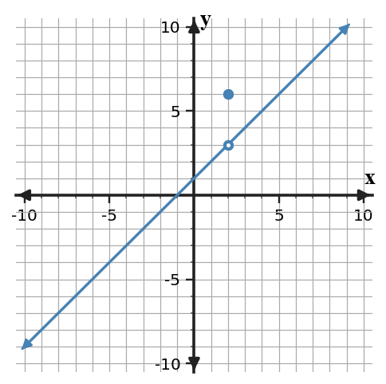
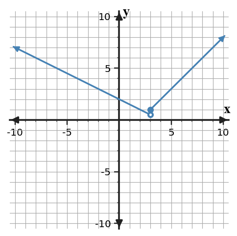
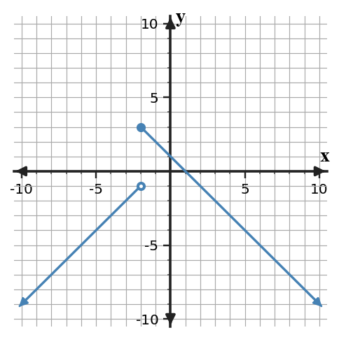
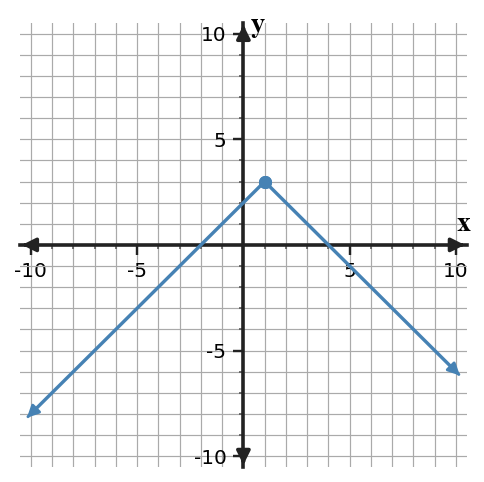
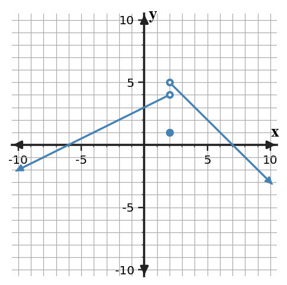
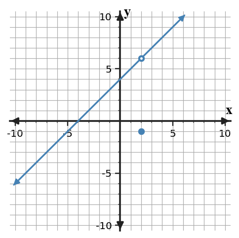
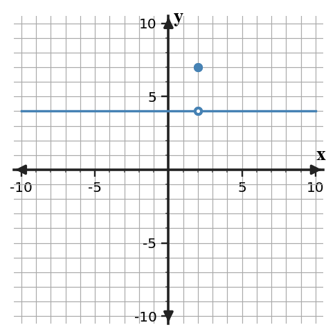
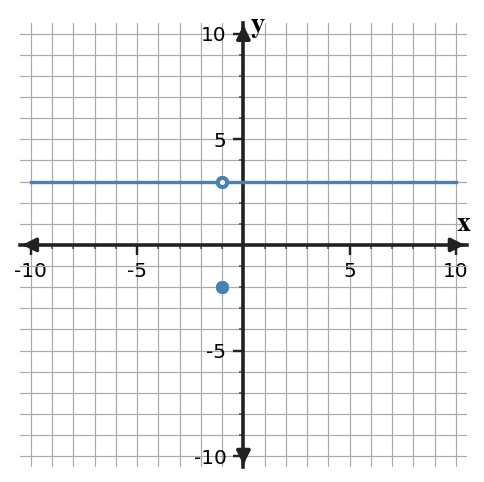
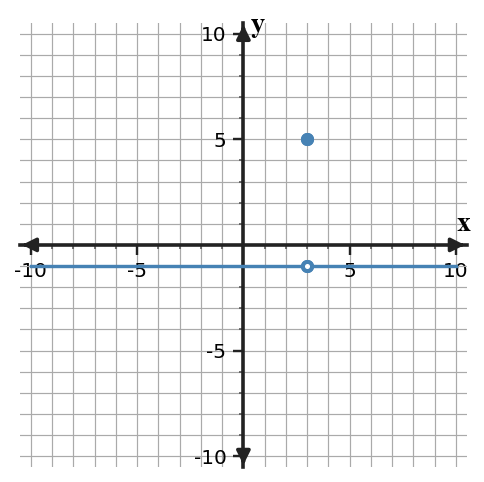
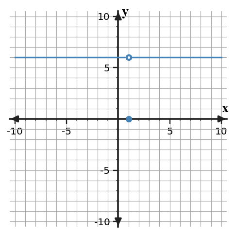

U1-MG01: Determine and interpret one-sided, two-sided, and overall limits from graphical and numerical information, distinguishing limiting behavior from the function value.
U1-MG02: Evaluate limits analytically by selecting and carrying out valid methods such as substitution, limit laws, factoring, conjugates, trigonometric limit reasoning, or squeeze reasoning when supported.
U1-MG03: Analyze continuity at points and on intervals, including piecewise boundaries, by coordinating limits, function values, and discontinuity classifications.
U1-MG04: Interpret infinite limits and end behavior and apply the Intermediate Value Theorem only when its hypotheses support the conclusion.
Progress Language
Not Yet: The student’s work shows that the learning outcome is still developing. Additional practice, feedback, and evidence are needed to demonstrate progress toward mastery.
Approaching: The student’s work shows evidence of growth toward mastering the learning outcome. Additional evidence is needed to demonstrate mastery consistently.
Meeting: The student’s work provides sufficient evidence of mastering the learning outcome.
Exceeding: The student’s work provides evidence of applying skills and/or concepts beyond the expected challenge of the learning outcome.
Section 1.1: What Is a Limit?
AP Topics: 1.1, 1.2
Learning Target: Relate average versus instantaneous change to the idea of a limit and read and interpret limit notation.
I can relate average versus instantaneous change to the idea of a limit and read and interpret limit notation.
I can estimate a limit from a graph or table.
I can connect shrinking secant intervals to instantaneous change.
What's To Come
U1-S1-WTC01

At $x=2$, the graph approaches one y-value but the plotted function value is different. Record the value the graph approaches and the plotted value. Which one should appear in $\lim_{x\to2} f(x)$?
Teacher answer / solution
The graph approaches 3, while $f(2)=6$; the limit notation uses 3.
Notes Example
U1-S1-NOTE-EX01
A table gives values of $f(x)$ near $x=4$. Estimate $\lim_{x\to4}f(x)$.
Teacher answer / solution
$x$
3.9
3.99
4.01
4.1
$f(x)$
7.8
7.98
8.02
8.2
The values approach 8 from both sides, so the limit is 8.
U1-S1-NOTE-EX02
For $f(x)=x^2$, find the average rate of change from $x=2$ to $x=2.5$. Explain why smaller right endpoints can help estimate an instantaneous rate at $x=2$.
Teacher answer / solution
Average rate $=(6.25-4)/(0.5)=4.5$. Shrinking the interval makes the secant slope approach the tangent slope.
U1-S1-NOTE-EX03
Translate $\lim_{x\to3}f(x)=7$ into a sentence that distinguishes approach from the value $f(3)$.
Teacher answer / solution
As x gets arbitrarily close to 3 from both sides, f(x) approaches 7; this statement alone does not determine f(3).
U1-S1-NOTE-EX04
A function has $\lim_{x\to-1}p(x)=4$ and $p(-1)=9$. Can both statements be true? Explain.
Teacher answer / solution
Yes. A limit describes nearby behavior and can differ from the assigned function value at the point.
Notes YTI
U1-S1-NOTE-YTI01
Use the table to estimate $\lim_{x\to5}g(x)$.
Teacher answer / solution
$x$
4.9
4.99
5.01
5.1
$g(x)$
9.8
9.98
10.02
10.2
The values approach 10, so the limit is 10.
U1-S1-NOTE-YTI02
For $g(x)=x^2+1$, find the average rate of change from $x=1$ to $x=1.2$ and describe what happens as the second endpoint moves toward 1.
Teacher answer / solution
Average rate $=(2.44-2)/0.2=2.2$; as the endpoint approaches 1, the secant slope approaches the instantaneous rate 2.
U1-S1-NOTE-YTI03
Write a sentence interpreting $\lim_{t\to6}h(t)=2$.
Teacher answer / solution
As t approaches 6 from both sides, h(t) approaches 2; h(6) may or may not equal 2.
U1-S1-NOTE-YTI04
Suppose $\lim_{x\to2}q(x)=-3$ while $q(2)$ is undefined. Does this prevent the limit from existing? Explain.
Teacher answer / solution
No. The limit depends on nearby values, not on whether q(2) is defined.
Practice Set 1
U1-S1-PS1-Q01
Use the table to estimate $\lim_{x\to 2}f(x)$.
x
1.9
1.99
2.01
2.1
f(x)
4.8
4.98
5.02
5.2
Teacher answer / solution
The values approach 5, so the limit is 5.
U1-S1-PS1-Q02
Use the table to estimate $\lim_{x\to 3}f(x)$.
x
2.9
2.99
3.01
3.1
f(x)
7.8
7.98
8.02
8.2
Teacher answer / solution
The values approach 8, so the limit is 8.
U1-S1-PS1-Q03
Use the table to estimate $\lim_{x\to 4}f(x)$.
x
3.9
3.99
4.01
4.1
f(x)
7.8
7.98
8.02
8.2
Teacher answer / solution
The values approach 8, so the limit is 8.
U1-S1-PS1-Q04
Use the table to estimate $\lim_{x\to 5}f(x)$.
x
4.9
4.99
5.01
5.1
f(x)
10.8
10.98
11.02
11.2
Teacher answer / solution
The values approach 11, so the limit is 11.
U1-S1-PS1-Q05
For $f(x)=x^2$, find the average rate of change on $[0,0.5]$.
Teacher answer / solution
0.5
U1-S1-PS1-Q06
For $f(x)=x^2$, find the average rate of change on $[1,1.25]$.
Teacher answer / solution
2.25
U1-S1-PS1-Q07
For $f(x)=x^2$, find the average rate of change on $[2,2.2]$.
Teacher answer / solution
4.2
U1-S1-PS1-Q08
For $f(x)=x^2$, find the average rate of change on $[-1,-0.9]$.
Teacher answer / solution
-1.9
U1-S1-PS1-Q09
Suppose $\lim_{x\to 2}f(x)=6$ and $f(2)=3$. Which statement correctly describes the limit?
$f(2)=3$
Nearby values of f approach 6.
The limit cannot exist.
$f(2)=6$
Teacher answer / solution
B. Nearby values of f approach 6.
U1-S1-PS1-Q10
Suppose $\lim_{x\to -2}f(x)=7$ and $f(-2)=9$. Which statement correctly describes the limit?
Nearby values of f approach 7.
The limit cannot exist.
$f(-2)=7$
$f(-2)=9$
Teacher answer / solution
A. Nearby values of f approach 7.
U1-S1-PS1-Q11
Suppose $\lim_{x\to -1}f(x)=8$ and $f(-1)=5$. Which statement correctly describes the limit?
The limit cannot exist.
$f(-1)=8$
$f(-1)=5$
Nearby values of f approach 8.
Teacher answer / solution
D. Nearby values of f approach 8.
U1-S1-PS1-Q12
Suppose $\lim_{x\to 0}f(x)=3$ and $f(0)=5$. Which statement correctly describes the limit?
$f(0)=3$
$f(0)=5$
Nearby values of f approach 3.
The limit cannot exist.
Teacher answer / solution
C. Nearby values of f approach 3.
U1-S1-PS1-Q13
Write one sentence interpreting $\lim_{t\to 4}g(t)=3$.
Teacher answer / solution
As t approaches 4 from both sides, g(t) approaches 3; the statement alone does not determine g(4).
U1-S1-PS1-Q14
Write one sentence interpreting $\lim_{t\to 5}g(t)=-3$.
Teacher answer / solution
As t approaches 5 from both sides, g(t) approaches -3; the statement alone does not determine g(5).
U1-S1-PS1-Q15
Write one sentence interpreting $\lim_{t\to 1}g(t)=-2$.
Teacher answer / solution
As t approaches 1 from both sides, g(t) approaches -2; the statement alone does not determine g(1).
U1-S1-PS1-Q16
A function has $\lim_{x\to 1}h(x)=3$ but $h(1)$ is undefined. Does the missing function value force the limit to be DNE? Justify.
Teacher answer / solution
No. A limit depends on values near the point; the function value at the point may be undefined.
U1-S1-PS1-Q17
A function has $\lim_{x\to 2}h(x)=4$ but $h(2)$ is undefined. Does the missing function value force the limit to be DNE? Justify.
Teacher answer / solution
No. A limit depends on values near the point; the function value at the point may be undefined.
U1-S1-PS1-Q18
A function has $\lim_{x\to 3}h(x)=5$ but $h(3)$ is undefined. Does the missing function value force the limit to be DNE? Justify.
Teacher answer / solution
No. A limit depends on values near the point; the function value at the point may be undefined.
Practice Set 2
U1-S1-PS2-Q01
Use the table to estimate $\lim_{x\to 7}f(x)$.
x
6.9
6.99
7.01
7.1
f(x)
14.8
14.98
15.02
15.2
Teacher answer / solution
The values approach 15, so the limit is 15.
U1-S1-PS2-Q02
Use the table to estimate $\lim_{x\to 8}f(x)$.
x
7.9
7.99
8.01
8.1
f(x)
17.8
17.98
18.02
18.2
Teacher answer / solution
The values approach 18, so the limit is 18.
U1-S1-PS2-Q03
Use the table to estimate $\lim_{x\to 9}f(x)$.
x
8.9
8.99
9.01
9.1
f(x)
17.8
17.98
18.02
18.2
Teacher answer / solution
The values approach 18, so the limit is 18.
U1-S1-PS2-Q04
Use the table to estimate $\lim_{x\to 10}f(x)$.
x
9.9
9.99
10.01
10.1
f(x)
20.8
20.98
21.02
21.2
Teacher answer / solution
The values approach 21, so the limit is 21.
U1-S1-PS2-Q05
For $f(x)=x^2$, find the average rate of change on $[4,4.5]$.
Teacher answer / solution
8.5
U1-S1-PS2-Q06
For $f(x)=x^2$, find the average rate of change on $[5,5.25]$.
Teacher answer / solution
10.25
U1-S1-PS2-Q07
For $f(x)=x^2$, find the average rate of change on $[6,6.2]$.
Teacher answer / solution
12.2
U1-S1-PS2-Q08
For $f(x)=x^2$, find the average rate of change on $[3,3.1]$.
Teacher answer / solution
6.1
U1-S1-PS2-Q09
Suppose $\lim_{x\to 7}f(x)=13$ and $f(7)=10$. Which statement correctly describes the limit?
$f(7)=13$
$f(7)=10$
Nearby values of f approach 13.
The limit cannot exist.
Teacher answer / solution
C. Nearby values of f approach 13.
U1-S1-PS2-Q10
Suppose $\lim_{x\to 3}f(x)=14$ and $f(3)=16$. Which statement correctly describes the limit?
$f(3)=16$
Nearby values of f approach 14.
The limit cannot exist.
$f(3)=14$
Teacher answer / solution
B. Nearby values of f approach 14.
U1-S1-PS2-Q11
Suppose $\lim_{x\to 4}f(x)=15$ and $f(4)=12$. Which statement correctly describes the limit?
Nearby values of f approach 15.
The limit cannot exist.
$f(4)=15$
$f(4)=12$
Teacher answer / solution
A. Nearby values of f approach 15.
U1-S1-PS2-Q12
Suppose $\lim_{x\to 5}f(x)=10$ and $f(5)=12$. Which statement correctly describes the limit?
The limit cannot exist.
$f(5)=10$
$f(5)=12$
Nearby values of f approach 10.
Teacher answer / solution
D. Nearby values of f approach 10.
U1-S1-PS2-Q13
Write one sentence interpreting $\lim_{t\to 9}g(t)=10$.
Teacher answer / solution
As t approaches 9 from both sides, g(t) approaches 10; the statement alone does not determine g(9).
U1-S1-PS2-Q14
Write one sentence interpreting $\lim_{t\to 10}g(t)=4$.
Teacher answer / solution
As t approaches 10 from both sides, g(t) approaches 4; the statement alone does not determine g(10).
U1-S1-PS2-Q15
Write one sentence interpreting $\lim_{t\to 6}g(t)=5$.
Teacher answer / solution
As t approaches 6 from both sides, g(t) approaches 5; the statement alone does not determine g(6).
U1-S1-PS2-Q16
A function has $\lim_{x\to 6}h(x)=10$ but $h(6)$ is undefined. Does the missing function value force the limit to be DNE? Justify.
Teacher answer / solution
No. A limit depends on values near the point; the function value at the point may be undefined.
U1-S1-PS2-Q17
A function has $\lim_{x\to 7}h(x)=11$ but $h(7)$ is undefined. Does the missing function value force the limit to be DNE? Justify.
Teacher answer / solution
No. A limit depends on values near the point; the function value at the point may be undefined.
U1-S1-PS2-Q18
A function has $\lim_{x\to 8}h(x)=12$ but $h(8)$ is undefined. Does the missing function value force the limit to be DNE? Justify.
Teacher answer / solution
No. A limit depends on values near the point; the function value at the point may be undefined.
Practice Set 3
U1-S1-PS3-Q01
Use the table to estimate $\lim_{x\to 12}f(x)$.
x
11.9
11.99
12.01
12.1
f(x)
24.8
24.98
25.02
25.2
Teacher answer / solution
The values approach 25, so the limit is 25.
U1-S1-PS3-Q02
Use the table to estimate $\lim_{x\to 13}f(x)$.
x
12.9
12.99
13.01
13.1
f(x)
27.8
27.98
28.02
28.2
Teacher answer / solution
The values approach 28, so the limit is 28.
U1-S1-PS3-Q03
Use the table to estimate $\lim_{x\to 14}f(x)$.
x
13.9
13.99
14.01
14.1
f(x)
27.8
27.98
28.02
28.2
Teacher answer / solution
The values approach 28, so the limit is 28.
U1-S1-PS3-Q04
Use the table to estimate $\lim_{x\to 15}f(x)$.
x
14.9
14.99
15.01
15.1
f(x)
30.8
30.98
31.02
31.2
Teacher answer / solution
The values approach 31, so the limit is 31.
U1-S1-PS3-Q05
For $f(x)=x^2$, find the average rate of change on $[8,8.5]$.
Teacher answer / solution
16.5
U1-S1-PS3-Q06
For $f(x)=x^2$, find the average rate of change on $[9,9.25]$.
Teacher answer / solution
18.25
U1-S1-PS3-Q07
For $f(x)=x^2$, find the average rate of change on $[10,10.2]$.
Teacher answer / solution
20.2
U1-S1-PS3-Q08
For $f(x)=x^2$, find the average rate of change on $[7,7.1]$.
Teacher answer / solution
14.1
U1-S1-PS3-Q09
Suppose $\lim_{x\to 12}f(x)=20$ and $f(12)=17$. Which statement correctly describes the limit?
The limit cannot exist.
$f(12)=20$
$f(12)=17$
Nearby values of f approach 20.
Teacher answer / solution
D. Nearby values of f approach 20.
U1-S1-PS3-Q10
Suppose $\lim_{x\to 8}f(x)=21$ and $f(8)=23$. Which statement correctly describes the limit?
$f(8)=21$
$f(8)=23$
Nearby values of f approach 21.
The limit cannot exist.
Teacher answer / solution
C. Nearby values of f approach 21.
U1-S1-PS3-Q11
Suppose $\lim_{x\to 9}f(x)=22$ and $f(9)=19$. Which statement correctly describes the limit?
$f(9)=19$
Nearby values of f approach 22.
The limit cannot exist.
$f(9)=22$
Teacher answer / solution
B. Nearby values of f approach 22.
U1-S1-PS3-Q12
Suppose $\lim_{x\to 10}f(x)=17$ and $f(10)=19$. Which statement correctly describes the limit?
Nearby values of f approach 17.
The limit cannot exist.
$f(10)=17$
$f(10)=19$
Teacher answer / solution
A. Nearby values of f approach 17.
U1-S1-PS3-Q13
Write one sentence interpreting $\lim_{t\to 14}g(t)=17$.
Teacher answer / solution
As t approaches 14 from both sides, g(t) approaches 17; the statement alone does not determine g(14).
U1-S1-PS3-Q14
Write one sentence interpreting $\lim_{t\to 15}g(t)=11$.
Teacher answer / solution
As t approaches 15 from both sides, g(t) approaches 11; the statement alone does not determine g(15).
U1-S1-PS3-Q15
Write one sentence interpreting $\lim_{t\to 11}g(t)=12$.
Teacher answer / solution
As t approaches 11 from both sides, g(t) approaches 12; the statement alone does not determine g(11).
U1-S1-PS3-Q16
A function has $\lim_{x\to 11}h(x)=17$ but $h(11)$ is undefined. Does the missing function value force the limit to be DNE? Justify.
Teacher answer / solution
No. A limit depends on values near the point; the function value at the point may be undefined.
U1-S1-PS3-Q17
A function has $\lim_{x\to 12}h(x)=18$ but $h(12)$ is undefined. Does the missing function value force the limit to be DNE? Justify.
Teacher answer / solution
No. A limit depends on values near the point; the function value at the point may be undefined.
U1-S1-PS3-Q18
A function has $\lim_{x\to 13}h(x)=19$ but $h(13)$ is undefined. Does the missing function value force the limit to be DNE? Justify.
Teacher answer / solution
No. A limit depends on values near the point; the function value at the point may be undefined.
Extra Practice
U1-S1-XP-Q01
Use the table to estimate $\lim_{x\to 17}f(x)$.
x
16.9
16.99
17.01
17.1
f(x)
34.8
34.98
35.02
35.2
Teacher answer / solution
The values approach 35, so the limit is 35.
U1-S1-XP-Q02
Use the table to estimate $\lim_{x\to 18}f(x)$.
x
17.9
17.99
18.01
18.1
f(x)
37.8
37.98
38.02
38.2
Teacher answer / solution
The values approach 38, so the limit is 38.
U1-S1-XP-Q03
Use the table to estimate $\lim_{x\to 19}f(x)$.
x
18.9
18.99
19.01
19.1
f(x)
37.8
37.98
38.02
38.2
Teacher answer / solution
The values approach 38, so the limit is 38.
U1-S1-XP-Q04
Use the table to estimate $\lim_{x\to 20}f(x)$.
x
19.9
19.99
20.01
20.1
f(x)
40.8
40.98
41.02
41.2
Teacher answer / solution
The values approach 41, so the limit is 41.
U1-S1-XP-Q05
For $f(x)=x^2$, find the average rate of change on $[12,12.5]$.
Teacher answer / solution
24.5
U1-S1-XP-Q06
For $f(x)=x^2$, find the average rate of change on $[13,13.25]$.
Teacher answer / solution
26.25
U1-S1-XP-Q07
For $f(x)=x^2$, find the average rate of change on $[14,14.2]$.
Teacher answer / solution
28.2
U1-S1-XP-Q08
For $f(x)=x^2$, find the average rate of change on $[11,11.1]$.
Teacher answer / solution
22.1
U1-S1-XP-Q09
Suppose $\lim_{x\to 17}f(x)=27$ and $f(17)=24$. Which statement correctly describes the limit?
Nearby values of f approach 27.
The limit cannot exist.
$f(17)=27$
$f(17)=24$
Teacher answer / solution
A. Nearby values of f approach 27.
U1-S1-XP-Q10
Suppose $\lim_{x\to 13}f(x)=28$ and $f(13)=30$. Which statement correctly describes the limit?
The limit cannot exist.
$f(13)=28$
$f(13)=30$
Nearby values of f approach 28.
Teacher answer / solution
D. Nearby values of f approach 28.
U1-S1-XP-Q11
Suppose $\lim_{x\to 14}f(x)=29$ and $f(14)=26$. Which statement correctly describes the limit?
$f(14)=29$
$f(14)=26$
Nearby values of f approach 29.
The limit cannot exist.
Teacher answer / solution
C. Nearby values of f approach 29.
U1-S1-XP-Q12
Suppose $\lim_{x\to 15}f(x)=24$ and $f(15)=26$. Which statement correctly describes the limit?
$f(15)=26$
Nearby values of f approach 24.
The limit cannot exist.
$f(15)=24$
Teacher answer / solution
B. Nearby values of f approach 24.
U1-S1-XP-Q13
Write one sentence interpreting $\lim_{t\to 19}g(t)=24$.
Teacher answer / solution
As t approaches 19 from both sides, g(t) approaches 24; the statement alone does not determine g(19).
U1-S1-XP-Q14
Write one sentence interpreting $\lim_{t\to 20}g(t)=18$.
Teacher answer / solution
As t approaches 20 from both sides, g(t) approaches 18; the statement alone does not determine g(20).
U1-S1-XP-Q15
Write one sentence interpreting $\lim_{t\to 16}g(t)=19$.
Teacher answer / solution
As t approaches 16 from both sides, g(t) approaches 19; the statement alone does not determine g(16).
U1-S1-XP-Q16
A function has $\lim_{x\to 16}h(x)=24$ but $h(16)$ is undefined. Does the missing function value force the limit to be DNE? Justify.
Teacher answer / solution
No. A limit depends on values near the point; the function value at the point may be undefined.
U1-S1-XP-Q17
A function has $\lim_{x\to 17}h(x)=25$ but $h(17)$ is undefined. Does the missing function value force the limit to be DNE? Justify.
Teacher answer / solution
No. A limit depends on values near the point; the function value at the point may be undefined.
U1-S1-XP-Q18
A function has $\lim_{x\to 18}h(x)=26$ but $h(18)$ is undefined. Does the missing function value force the limit to be DNE? Justify.
Teacher answer / solution
No. A limit depends on values near the point; the function value at the point may be undefined.
CYU
U1-S1-CYU-Q01
If nearby values of f approach 5 as x approaches 2, while f(2)=9, state the limit.
Teacher answer / solution
5
U1-S1-CYU-Q02
What does $\lim_{x\to3}g(x)=4$ say about g(x) near x=3?
Teacher answer / solution
g(x) approaches 4 as x approaches 3 from both sides.
U1-S1-CYU-Q03
For f(x)=x^2, find the secant slope from x=1 to x=1.1.
Teacher answer / solution
2.1
U1-S1-CYU-Q04
Does an undefined f(a) automatically force $\lim_{x\to a}f(x)$ to be DNE?
Teacher answer / solution
No.
U1-S1-CYU-Q05
Use values 7.9, 7.99, 8.01, 8.1 near x=4 to estimate a limit that approaches 8.
Teacher answer / solution
8
U1-S1-CYU-Q06
Distinguish average rate of change from instantaneous rate of change in one sentence.
Teacher answer / solution
Average rate uses a secant over an interval; instantaneous rate is the limiting rate at a point.
Tarsia
U1-S1-TAR-Q01
$\lim_{x\to2}f(x)=5$ means
Teacher answer / solution
f(x) approaches 5 near x=2
U1-S1-TAR-Q02
average rate of change uses
Teacher answer / solution
a secant line
U1-S1-TAR-Q03
instantaneous rate of change uses
Teacher answer / solution
a limiting tangent slope
U1-S1-TAR-Q04
limit notation symbol
Teacher answer / solution
lim
U1-S1-TAR-Q05
nearby values approach 7
Teacher answer / solution
limit 7
U1-S1-TAR-Q06
function value at the point
Teacher answer / solution
may differ from the limit
U1-S1-TAR-Q07
undefined point value
Teacher answer / solution
does not force DNE
U1-S1-TAR-Q08
approach from both sides
Teacher answer / solution
two-sided behavior
U1-S1-TAR-Q09
input variable approaches a
Teacher answer / solution
x approaches a
U1-S1-TAR-Q10
output approaches L
Teacher answer / solution
f(x) approaches L
U1-S1-TAR-Q11
shrinking secant intervals
Teacher answer / solution
estimate instantaneous rate
U1-S1-TAR-Q12
table values near a
Teacher answer / solution
numerical limit evidence
U1-S1-TAR-Q13
graph near a
Teacher answer / solution
graphical limit evidence
U1-S1-TAR-Q14
limit depends on
Teacher answer / solution
nearby function values
U1-S1-TAR-Q15
value f(a) describes
Teacher answer / solution
the assigned point value
U1-S1-TAR-Q16
secant slope formula
Teacher answer / solution
change in y over change in x
U1-S1-TAR-Q17
limit statement needs
Teacher answer / solution
approach point and output
U1-S1-TAR-Q18
a finite limit can exist with
Teacher answer / solution
a hole at the point
Blooket
U1-S1-BLOOK-Q01
If lim x->2 f(x)=5 and f(2)=9 what is the limit?
5
9
DNE
14
Teacher answer / solution
A. 5
U1-S1-BLOOK-Q02
A limit primarily describes
only the point value
nearby behavior
the domain endpoint
a secant interval
Teacher answer / solution
B. nearby behavior
U1-S1-BLOOK-Q03
Average rate of change is represented by
a tangent point
a function value
a secant slope
an asymptote
Teacher answer / solution
C. a secant slope
U1-S1-BLOOK-Q04
Instantaneous rate is approached by
widening secant intervals
changing only y-values
deleting a point
shrinking secant intervals
Teacher answer / solution
D. shrinking secant intervals
U1-S1-BLOOK-Q05
If f(3) is undefined can lim x->3 f(x) exist?
Yes
No
Only if f(3)=0
Only from the right
Teacher answer / solution
A. Yes
U1-S1-BLOOK-Q06
Near x=3 values approach 8 but f(3)=10. What is the limit?
10
8
DNE
18
Teacher answer / solution
B. 8
U1-S1-BLOOK-Q07
Near x=4 values approach 9 but f(4)=12. What is the limit?
12
DNE
9
21
Teacher answer / solution
C. 9
U1-S1-BLOOK-Q08
Near x=5 values approach 10 but f(5)=12. What is the limit?
12
DNE
22
10
Teacher answer / solution
D. 10
U1-S1-BLOOK-Q09
Near x=6 values approach 11 but f(6)=14. What is the limit?
11
14
DNE
25
Teacher answer / solution
A. 11
U1-S1-BLOOK-Q10
Near x=7 values approach 12 but f(7)=14. What is the limit?
14
12
DNE
26
Teacher answer / solution
B. 12
U1-S1-BLOOK-Q11
Near x=8 values approach 13 but f(8)=16. What is the limit?
16
DNE
13
29
Teacher answer / solution
C. 13
U1-S1-BLOOK-Q12
Near x=9 values approach 14 but f(9)=16. What is the limit?
16
DNE
30
14
Teacher answer / solution
D. 14
U1-S1-BLOOK-Q13
Near x=10 values approach 15 but f(10)=18. What is the limit?
15
18
DNE
33
Teacher answer / solution
A. 15
U1-S1-BLOOK-Q14
Near x=11 values approach 16 but f(11)=18. What is the limit?
18
16
DNE
34
Teacher answer / solution
B. 16
U1-S1-BLOOK-Q15
Near x=12 values approach 17 but f(12)=20. What is the limit?
20
DNE
17
37
Teacher answer / solution
C. 17
U1-S1-BLOOK-Q16
Near x=13 values approach 18 but f(13)=20. What is the limit?
20
DNE
38
18
Teacher answer / solution
D. 18
U1-S1-BLOOK-Q17
Near x=14 values approach 19 but f(14)=22. What is the limit?
19
22
DNE
41
Teacher answer / solution
A. 19
U1-S1-BLOOK-Q18
Near x=15 values approach 20 but f(15)=22. What is the limit?
22
20
DNE
42
Teacher answer / solution
B. 20
U1-S1-BLOOK-Q19
Near x=16 values approach 21 but f(16)=24. What is the limit?
24
DNE
21
45
Teacher answer / solution
C. 21
U1-S1-BLOOK-Q20
Near x=17 values approach 22 but f(17)=24. What is the limit?
24
DNE
46
22
Teacher answer / solution
D. 22
Warm-Up 1
U1-S1-WU1-Q01
For $f(x)=x^2$, compute the slope between x=1 and x=2.
Teacher answer / solution
3
U1-S1-WU1-Q02
What does a graph’s y-coordinate at x=2 tell you directly?
Teacher answer / solution
The function value at x=2.
Warm-Up 2
U1-S1-WU2-Q01
A table near x=3 approaches 8 from both sides. Estimate the limit.
Teacher answer / solution
8
U1-S1-WU2-Q02
Can f(3)=1 while the limit at 3 is 8?
Teacher answer / solution
Yes.
Warm-Up 3
U1-S1-WU3-Q01
Find the average rate of change of $x^2$ on [2,2.1].
Teacher answer / solution
4.1
U1-S1-WU3-Q02
Write $x$ approaches 5 using limit-notation language.
Teacher answer / solution
Use x->5 as the approach portion of a limit.
Exit Ticket A
U1-S1-ET-A-Q01
A table gives f(1.9)=3.8 f(1.99)=3.98 f(2.01)=4.02 and f(2.1)=4.2 while f(2)=9. Estimate the limit at 2 and explain why f(2) does not change your estimate.
Teacher answer / solution
The limit is 4; the limit uses nearby values rather than the assigned point value.
Exit Ticket B
U1-S1-ET-B-Q01
For $f(x)=x^2$, compute the secant slope from x=3 to x=3.1. What instantaneous-rate value does this suggest as the interval shrinks?
Teacher answer / solution
The secant slope is 6.1; shrinking intervals suggest an instantaneous rate of 6 at x=3.
Exit Ticket C
U1-S1-ET-C-Q01
Interpret $\lim_{x\to-1}g(x)=5$ and state one thing the notation does not tell you.
Teacher answer / solution
g(x) approaches 5 from both sides as x approaches -1; it does not determine g(-1).
Section 1.2: Limits from Graphs and Tables
AP Topics: 1.3, 1.4, 1.9
Learning Target: Determine one-sided and two-sided limits from graphs and tables, including when a limit does not exist.
I can determine one-sided and two-sided limits from graphs and tables, including when a limit does not exist.
I can compare graphical and numerical estimates of the same limit.
I can use calculator-supported tables as a check on graphical reasoning.
What's To Come
U1-S2-WTC01

As $x$ approaches 3, compare the height approached from the left with the height approached from the right. What does that comparison suggest about $\lim_{x\to3}f(x)$?
Teacher answer / solution
The one-sided limits differ, so the two-sided limit does not exist.
Notes Example
U1-S2-NOTE-EX01
From a graph, $f(x)$ approaches 2 as $x\to1^-$ and 5 as $x\to1^+$. State both one-sided limits and the two-sided limit.
Teacher answer / solution
$\lim_{x\to1^-}f(x)=2$, $\lim_{x\to1^+}f(x)=5$, so $\lim_{x\to1}f(x)$ DNE.
U1-S2-NOTE-EX02
The table approaches 6 from both sides of $x=2$, but $f(2)$ is blank. What can you conclude about the limit?
Teacher answer / solution
The numerical evidence supports $\lim_{x\to2}f(x)=6$; a missing point value does not by itself make the limit DNE.
U1-S2-NOTE-EX03
A table uses inputs only larger than 5. Which limit can it directly estimate: left-hand, right-hand, or two-sided? Explain.
Teacher answer / solution
It directly estimates the right-hand limit because every input approaches 5 from values greater than 5.
U1-S2-NOTE-EX04
Explain why agreement of two one-sided limits matters for a finite two-sided limit.
Teacher answer / solution
A finite two-sided limit exists only when both one-sided limits exist and are equal.
Notes YTI
U1-S2-NOTE-YTI01
A graph approaches -1 from the left and 3 from the right at $x=4$. State the one-sided and two-sided limits.
Teacher answer / solution
$\lim_{x\to4^-}f(x)=-1$, $\lim_{x\to4^+}f(x)=3$; the two-sided limit DNE.
U1-S2-NOTE-YTI02
A calculator table approaches -4 from both sides of $x=-3$, while the function is undefined at -3. What conclusion is supported?
Teacher answer / solution
$\lim_{x\to-3}f(x)=-4$ is supported; the function value is not needed to estimate the limit.
U1-S2-NOTE-YTI03
A table lists inputs 1.9, 1.99, 1.999. Which directional limit is represented near 2?
Teacher answer / solution
The left-hand limit, because the inputs are less than 2 and increase toward 2.
U1-S2-NOTE-YTI04
If both one-sided limits at $x=a$ equal L, what two-sided limit conclusion follows?
Teacher answer / solution
$\lim_{x\to a}f(x)=L$.
Practice Set 1
U1-S2-PS1-Q01
At $x=-1$, a graph approaches -1 from the left and -1 from the right. State both one-sided limits and the two-sided limit.
Teacher answer / solution
Left-hand: -1; right-hand: -1; two-sided: -1.
U1-S2-PS1-Q02
At $x=0$, a graph approaches 0 from the left and 0 from the right. State both one-sided limits and the two-sided limit.
Teacher answer / solution
Left-hand: 0; right-hand: 0; two-sided: 0.
U1-S2-PS1-Q03
At $x=1$, a graph approaches 1 from the left and 3 from the right. State both one-sided limits and the two-sided limit.
Teacher answer / solution
Left-hand: 1; right-hand: 3; two-sided: DNE.
U1-S2-PS1-Q04
At $x=2$, a graph approaches 2 from the left and 2 from the right. State both one-sided limits and the two-sided limit.
Teacher answer / solution
Left-hand: 2; right-hand: 2; two-sided: 2.
U1-S2-PS1-Q05
At $x=-2$, a graph approaches 3 from the left and 3 from the right. State both one-sided limits and the two-sided limit.
Teacher answer / solution
Left-hand: 3; right-hand: 3; two-sided: 3.
U1-S2-PS1-Q06
Estimate the two-sided limit from the table.
x
-1.1
-1.01
-0.99
-0.9
f(x)
0.9
0.99
1.01
1.1
Teacher answer / solution
The limit is approximately 1.
U1-S2-PS1-Q07
Estimate the two-sided limit from the table.
x
-0.1
-0.01
0.01
0.1
f(x)
1.9
1.99
2.01
2.1
Teacher answer / solution
The limit is approximately 2.
U1-S2-PS1-Q08
Estimate the two-sided limit from the table.
x
0.9
0.99
1.01
1.1
f(x)
2.9
2.99
3.01
3.1
Teacher answer / solution
The limit is approximately 3.
U1-S2-PS1-Q09
Estimate the two-sided limit from the table.
x
1.9
1.99
2.01
2.1
f(x)
3.9
3.99
4.01
4.1
Teacher answer / solution
The limit is approximately 4.
U1-S2-PS1-Q10
Near $x=-2$, values approach -1 from the left and -1 from the right; $f(-2)=3$. What is $\lim_{x\to -2}f(x)$?
3
0
-1
DNE
Teacher answer / solution
C. -1
U1-S2-PS1-Q11
Near $x=-1$, values approach 0 from the left and 1 from the right; $f(-1)=4$. What is $\lim_{x\to -1}f(x)$?
4
DNE
0
1
Teacher answer / solution
B. DNE
U1-S2-PS1-Q12
Near $x=0$, values approach 1 from the left and 1 from the right; $f(0)=5$. What is $\lim_{x\to 0}f(x)$?
1
DNE
5
2
Teacher answer / solution
A. 1
U1-S2-PS1-Q13
Near $x=1$, values approach 2 from the left and 3 from the right; $f(1)=6$. What is $\lim_{x\to 1}f(x)$?
2
3
6
DNE
Teacher answer / solution
D. DNE
U1-S2-PS1-Q14
A calculator table uses only x-values less than 2 and moves them toward 2. Which one-sided limit is being estimated?
Teacher answer / solution
The left-hand limit.
U1-S2-PS1-Q15
A calculator table uses only x-values greater than -2 and moves them toward -2. Which one-sided limit is being estimated?
Teacher answer / solution
The right-hand limit.
U1-S2-PS1-Q16
A calculator table uses only x-values less than -1 and moves them toward -1. Which one-sided limit is being estimated?
Teacher answer / solution
The left-hand limit.
U1-S2-PS1-Q17
A student says a two-sided limit at $x=0$ exists because the graph has a filled point there. What must be checked instead?
Teacher answer / solution
Compare the left-hand and right-hand limiting behavior; they must both exist and agree.
U1-S2-PS1-Q18
A student says a two-sided limit at $x=1$ exists because the graph has a filled point there. What must be checked instead?
Teacher answer / solution
Compare the left-hand and right-hand limiting behavior; they must both exist and agree.
Practice Set 2
U1-S2-PS2-Q01
At $x=4$, a graph approaches 6 from the left and 6 from the right. State both one-sided limits and the two-sided limit.
Teacher answer / solution
Left-hand: 6; right-hand: 6; two-sided: 6.
U1-S2-PS2-Q02
At $x=5$, a graph approaches 7 from the left and 7 from the right. State both one-sided limits and the two-sided limit.
Teacher answer / solution
Left-hand: 7; right-hand: 7; two-sided: 7.
U1-S2-PS2-Q03
At $x=6$, a graph approaches 8 from the left and 10 from the right. State both one-sided limits and the two-sided limit.
Teacher answer / solution
Left-hand: 8; right-hand: 10; two-sided: DNE.
U1-S2-PS2-Q04
At $x=7$, a graph approaches 9 from the left and 9 from the right. State both one-sided limits and the two-sided limit.
Teacher answer / solution
Left-hand: 9; right-hand: 9; two-sided: 9.
U1-S2-PS2-Q05
At $x=3$, a graph approaches 10 from the left and 10 from the right. State both one-sided limits and the two-sided limit.
Teacher answer / solution
Left-hand: 10; right-hand: 10; two-sided: 10.
U1-S2-PS2-Q06
Estimate the two-sided limit from the table.
x
3.9
3.99
4.01
4.1
f(x)
7.9
7.99
8.01
8.1
Teacher answer / solution
The limit is approximately 8.
U1-S2-PS2-Q07
Estimate the two-sided limit from the table.
x
4.9
4.99
5.01
5.1
f(x)
8.9
8.99
9.01
9.1
Teacher answer / solution
The limit is approximately 9.
U1-S2-PS2-Q08
Estimate the two-sided limit from the table.
x
5.9
5.99
6.01
6.1
f(x)
9.9
9.99
10.01
10.1
Teacher answer / solution
The limit is approximately 10.
U1-S2-PS2-Q09
Estimate the two-sided limit from the table.
x
6.9
6.99
7.01
7.1
f(x)
10.9
10.99
11.01
11.1
Teacher answer / solution
The limit is approximately 11.
U1-S2-PS2-Q10
Near $x=3$, values approach 5 from the left and 5 from the right; $f(3)=9$. What is $\lim_{x\to 3}f(x)$?
DNE
9
6
5
Teacher answer / solution
D. 5
U1-S2-PS2-Q11
Near $x=4$, values approach 6 from the left and 7 from the right; $f(4)=10$. What is $\lim_{x\to 4}f(x)$?
7
10
DNE
6
Teacher answer / solution
C. DNE
U1-S2-PS2-Q12
Near $x=5$, values approach 7 from the left and 7 from the right; $f(5)=11$. What is $\lim_{x\to 5}f(x)$?
8
7
DNE
11
Teacher answer / solution
B. 7
U1-S2-PS2-Q13
Near $x=6$, values approach 8 from the left and 9 from the right; $f(6)=12$. What is $\lim_{x\to 6}f(x)$?
DNE
8
9
12
Teacher answer / solution
A. DNE
U1-S2-PS2-Q14
A calculator table uses only x-values less than 7 and moves them toward 7. Which one-sided limit is being estimated?
Teacher answer / solution
The left-hand limit.
U1-S2-PS2-Q15
A calculator table uses only x-values greater than 3 and moves them toward 3. Which one-sided limit is being estimated?
Teacher answer / solution
The right-hand limit.
U1-S2-PS2-Q16
A calculator table uses only x-values less than 4 and moves them toward 4. Which one-sided limit is being estimated?
Teacher answer / solution
The left-hand limit.
U1-S2-PS2-Q17
A student says a two-sided limit at $x=5$ exists because the graph has a filled point there. What must be checked instead?
Teacher answer / solution
Compare the left-hand and right-hand limiting behavior; they must both exist and agree.
U1-S2-PS2-Q18
A student says a two-sided limit at $x=6$ exists because the graph has a filled point there. What must be checked instead?
Teacher answer / solution
Compare the left-hand and right-hand limiting behavior; they must both exist and agree.
Practice Set 3
U1-S2-PS3-Q01
At $x=9$, a graph approaches 13 from the left and 13 from the right. State both one-sided limits and the two-sided limit.
Teacher answer / solution
Left-hand: 13; right-hand: 13; two-sided: 13.
U1-S2-PS3-Q02
At $x=10$, a graph approaches 14 from the left and 14 from the right. State both one-sided limits and the two-sided limit.
Teacher answer / solution
Left-hand: 14; right-hand: 14; two-sided: 14.
U1-S2-PS3-Q03
At $x=11$, a graph approaches 15 from the left and 17 from the right. State both one-sided limits and the two-sided limit.
Teacher answer / solution
Left-hand: 15; right-hand: 17; two-sided: DNE.
U1-S2-PS3-Q04
At $x=12$, a graph approaches 16 from the left and 16 from the right. State both one-sided limits and the two-sided limit.
Teacher answer / solution
Left-hand: 16; right-hand: 16; two-sided: 16.
U1-S2-PS3-Q05
At $x=8$, a graph approaches 17 from the left and 17 from the right. State both one-sided limits and the two-sided limit.
Teacher answer / solution
Left-hand: 17; right-hand: 17; two-sided: 17.
U1-S2-PS3-Q06
Estimate the two-sided limit from the table.
x
8.9
8.99
9.01
9.1
f(x)
14.9
14.99
15.01
15.1
Teacher answer / solution
The limit is approximately 15.
U1-S2-PS3-Q07
Estimate the two-sided limit from the table.
x
9.9
9.99
10.01
10.1
f(x)
15.9
15.99
16.01
16.1
Teacher answer / solution
The limit is approximately 16.
U1-S2-PS3-Q08
Estimate the two-sided limit from the table.
x
10.9
10.99
11.01
11.1
f(x)
16.9
16.99
17.01
17.1
Teacher answer / solution
The limit is approximately 17.
U1-S2-PS3-Q09
Estimate the two-sided limit from the table.
x
11.9
11.99
12.01
12.1
f(x)
17.9
17.99
18.01
18.1
Teacher answer / solution
The limit is approximately 18.
U1-S2-PS3-Q10
Near $x=8$, values approach 11 from the left and 11 from the right; $f(8)=15$. What is $\lim_{x\to 8}f(x)$?
11
DNE
15
12
Teacher answer / solution
A. 11
U1-S2-PS3-Q11
Near $x=9$, values approach 12 from the left and 13 from the right; $f(9)=16$. What is $\lim_{x\to 9}f(x)$?
12
13
16
DNE
Teacher answer / solution
D. DNE
U1-S2-PS3-Q12
Near $x=10$, values approach 13 from the left and 13 from the right; $f(10)=17$. What is $\lim_{x\to 10}f(x)$?
17
14
13
DNE
Teacher answer / solution
C. 13
U1-S2-PS3-Q13
Near $x=11$, values approach 14 from the left and 15 from the right; $f(11)=18$. What is $\lim_{x\to 11}f(x)$?
18
DNE
14
15
Teacher answer / solution
B. DNE
U1-S2-PS3-Q14
A calculator table uses only x-values less than 12 and moves them toward 12. Which one-sided limit is being estimated?
Teacher answer / solution
The left-hand limit.
U1-S2-PS3-Q15
A calculator table uses only x-values greater than 8 and moves them toward 8. Which one-sided limit is being estimated?
Teacher answer / solution
The right-hand limit.
U1-S2-PS3-Q16
A calculator table uses only x-values less than 9 and moves them toward 9. Which one-sided limit is being estimated?
Teacher answer / solution
The left-hand limit.
U1-S2-PS3-Q17
A student says a two-sided limit at $x=10$ exists because the graph has a filled point there. What must be checked instead?
Teacher answer / solution
Compare the left-hand and right-hand limiting behavior; they must both exist and agree.
U1-S2-PS3-Q18
A student says a two-sided limit at $x=11$ exists because the graph has a filled point there. What must be checked instead?
Teacher answer / solution
Compare the left-hand and right-hand limiting behavior; they must both exist and agree.
Extra Practice
U1-S2-XP-Q01
At $x=14$, a graph approaches 20 from the left and 20 from the right. State both one-sided limits and the two-sided limit.
Teacher answer / solution
Left-hand: 20; right-hand: 20; two-sided: 20.
U1-S2-XP-Q02
At $x=15$, a graph approaches 21 from the left and 21 from the right. State both one-sided limits and the two-sided limit.
Teacher answer / solution
Left-hand: 21; right-hand: 21; two-sided: 21.
U1-S2-XP-Q03
At $x=16$, a graph approaches 22 from the left and 24 from the right. State both one-sided limits and the two-sided limit.
Teacher answer / solution
Left-hand: 22; right-hand: 24; two-sided: DNE.
U1-S2-XP-Q04
At $x=17$, a graph approaches 23 from the left and 23 from the right. State both one-sided limits and the two-sided limit.
Teacher answer / solution
Left-hand: 23; right-hand: 23; two-sided: 23.
U1-S2-XP-Q05
At $x=13$, a graph approaches 24 from the left and 24 from the right. State both one-sided limits and the two-sided limit.
Teacher answer / solution
Left-hand: 24; right-hand: 24; two-sided: 24.
U1-S2-XP-Q06
Estimate the two-sided limit from the table.
x
13.9
13.99
14.01
14.1
f(x)
21.9
21.99
22.01
22.1
Teacher answer / solution
The limit is approximately 22.
U1-S2-XP-Q07
Estimate the two-sided limit from the table.
x
14.9
14.99
15.01
15.1
f(x)
22.9
22.99
23.01
23.1
Teacher answer / solution
The limit is approximately 23.
U1-S2-XP-Q08
Estimate the two-sided limit from the table.
x
15.9
15.99
16.01
16.1
f(x)
23.9
23.99
24.01
24.1
Teacher answer / solution
The limit is approximately 24.
U1-S2-XP-Q09
Estimate the two-sided limit from the table.
x
16.9
16.99
17.01
17.1
f(x)
24.9
24.99
25.01
25.1
Teacher answer / solution
The limit is approximately 25.
U1-S2-XP-Q10
Near $x=13$, values approach 17 from the left and 17 from the right; $f(13)=21$. What is $\lim_{x\to 13}f(x)$?
18
17
DNE
21
Teacher answer / solution
B. 17
U1-S2-XP-Q11
Near $x=14$, values approach 18 from the left and 19 from the right; $f(14)=22$. What is $\lim_{x\to 14}f(x)$?
DNE
18
19
22
Teacher answer / solution
A. DNE
U1-S2-XP-Q12
Near $x=15$, values approach 19 from the left and 19 from the right; $f(15)=23$. What is $\lim_{x\to 15}f(x)$?
DNE
23
20
19
Teacher answer / solution
D. 19
U1-S2-XP-Q13
Near $x=16$, values approach 20 from the left and 21 from the right; $f(16)=24$. What is $\lim_{x\to 16}f(x)$?
21
24
DNE
20
Teacher answer / solution
C. DNE
U1-S2-XP-Q14
A calculator table uses only x-values less than 17 and moves them toward 17. Which one-sided limit is being estimated?
Teacher answer / solution
The left-hand limit.
U1-S2-XP-Q15
A calculator table uses only x-values greater than 13 and moves them toward 13. Which one-sided limit is being estimated?
Teacher answer / solution
The right-hand limit.
U1-S2-XP-Q16
A calculator table uses only x-values less than 14 and moves them toward 14. Which one-sided limit is being estimated?
Teacher answer / solution
The left-hand limit.
U1-S2-XP-Q17
A student says a two-sided limit at $x=15$ exists because the graph has a filled point there. What must be checked instead?
Teacher answer / solution
Compare the left-hand and right-hand limiting behavior; they must both exist and agree.
U1-S2-XP-Q18
A student says a two-sided limit at $x=16$ exists because the graph has a filled point there. What must be checked instead?
Teacher answer / solution
Compare the left-hand and right-hand limiting behavior; they must both exist and agree.
CYU
U1-S2-CYU-Q01
If the left-hand limit is 2 and the right-hand limit is 2, what is the two-sided limit?
Teacher answer / solution
2
U1-S2-CYU-Q02
If the one-sided limits are -1 and 4, what is the two-sided limit?
Teacher answer / solution
DNE
U1-S2-CYU-Q03
A table approaches 6 only from inputs larger than 3. Which directional limit is estimated?
Teacher answer / solution
Right-hand limit.
U1-S2-CYU-Q04
Can a two-sided limit exist when the function value is undefined?
Teacher answer / solution
Yes.
U1-S2-CYU-Q05
What must be compared before declaring a finite two-sided limit from a graph?
Teacher answer / solution
The left-hand and right-hand limits.
U1-S2-CYU-Q06
Why can a calculator table be evidence but not a proof of a limit?
Teacher answer / solution
It samples finitely many values and cannot establish all nearby behavior.
Tarsia
U1-S2-TAR-Q01
left-hand notation
Teacher answer / solution
$x\to a^-$
U1-S2-TAR-Q02
right-hand notation
Teacher answer / solution
$x\to a^+$
U1-S2-TAR-Q03
equal finite one-sided limits
Teacher answer / solution
finite two-sided limit
U1-S2-TAR-Q04
unequal one-sided limits
Teacher answer / solution
two-sided limit DNE
U1-S2-TAR-Q05
inputs below a approach a
Teacher answer / solution
left-hand limit
U1-S2-TAR-Q06
inputs above a approach a
Teacher answer / solution
right-hand limit
U1-S2-TAR-Q07
filled point alone determines
Teacher answer / solution
function value only
U1-S2-TAR-Q08
hole alone implies about limit
Teacher answer / solution
nothing by itself
U1-S2-TAR-Q09
table from both sides
Teacher answer / solution
two-sided numerical evidence
U1-S2-TAR-Q10
graph from left only
Teacher answer / solution
left-hand graphical evidence
U1-S2-TAR-Q11
DNE abbreviation
Teacher answer / solution
does not exist
U1-S2-TAR-Q12
one-sided limits 3 and 3
Teacher answer / solution
two-sided limit 3
U1-S2-TAR-Q13
one-sided limits 3 and 4
Teacher answer / solution
DNE because 3 differs from 4
U1-S2-TAR-Q14
calculator table supports
Teacher answer / solution
numerical estimate
U1-S2-TAR-Q15
two-sided limit asks about
Teacher answer / solution
both approach directions
U1-S2-TAR-Q16
f(a) undefined but sides agree
Teacher answer / solution
limit may still exist
U1-S2-TAR-Q17
approach directions disagree
Teacher answer / solution
no finite two-sided limit
U1-S2-TAR-Q18
directional superscript minus
Teacher answer / solution
approach from the left
Blooket
U1-S2-BLOOK-Q01
Left and right limits are both 4. The two-sided limit is
4
DNE
0
the point value
Teacher answer / solution
A. 4
U1-S2-BLOOK-Q02
Left limit is 2 and right limit is 5. The two-sided limit is
2
DNE
5
7
Teacher answer / solution
B. DNE
U1-S2-BLOOK-Q03
Inputs greater than a moving toward a estimate the
left-hand limit
function value
right-hand limit
average rate
Teacher answer / solution
C. right-hand limit
U1-S2-BLOOK-Q04
A filled point at x=a directly tells you
the left limit
the right limit
the two-sided limit
f(a)
Teacher answer / solution
D. f(a)
U1-S2-BLOOK-Q05
If f(a) is undefined but both sides approach 6 then the limit can be
6
0
DNE
a
Teacher answer / solution
A. 6
U1-S2-BLOOK-Q06
At x=1 the left limit is -1 and the right limit is -1. What is the two-sided limit?
DNE
-1
0
-2
Teacher answer / solution
B. -1
U1-S2-BLOOK-Q07
At x=2 the left limit is 0 and the right limit is 2. What is the two-sided limit?
0
2
DNE
12
Teacher answer / solution
C. DNE
U1-S2-BLOOK-Q08
At x=3 the left limit is 1 and the right limit is 1. What is the two-sided limit?
DNE
2
0
1
Teacher answer / solution
D. 1
U1-S2-BLOOK-Q09
At x=0 the left limit is 2 and the right limit is 4. What is the two-sided limit?
DNE
2
4
16
Teacher answer / solution
A. DNE
U1-S2-BLOOK-Q10
At x=1 the left limit is 3 and the right limit is 3. What is the two-sided limit?
DNE
3
4
2
Teacher answer / solution
B. 3
U1-S2-BLOOK-Q11
At x=2 the left limit is -1 and the right limit is 1. What is the two-sided limit?
-1
1
DNE
10
Teacher answer / solution
C. DNE
U1-S2-BLOOK-Q12
At x=3 the left limit is 0 and the right limit is 0. What is the two-sided limit?
DNE
1
-1
0
Teacher answer / solution
D. 0
U1-S2-BLOOK-Q13
At x=0 the left limit is 1 and the right limit is 3. What is the two-sided limit?
DNE
1
3
14
Teacher answer / solution
A. DNE
U1-S2-BLOOK-Q14
At x=1 the left limit is 2 and the right limit is 2. What is the two-sided limit?
DNE
2
3
1
Teacher answer / solution
B. 2
U1-S2-BLOOK-Q15
At x=2 the left limit is 3 and the right limit is 5. What is the two-sided limit?
3
5
DNE
18
Teacher answer / solution
C. DNE
U1-S2-BLOOK-Q16
At x=3 the left limit is -1 and the right limit is -1. What is the two-sided limit?
DNE
0
-2
-1
Teacher answer / solution
D. -1
U1-S2-BLOOK-Q17
At x=0 the left limit is 0 and the right limit is 2. What is the two-sided limit?
DNE
0
2
12
Teacher answer / solution
A. DNE
U1-S2-BLOOK-Q18
At x=1 the left limit is 1 and the right limit is 1. What is the two-sided limit?
DNE
1
2
0
Teacher answer / solution
B. 1
U1-S2-BLOOK-Q19
At x=2 the left limit is 2 and the right limit is 4. What is the two-sided limit?
2
4
DNE
16
Teacher answer / solution
C. DNE
U1-S2-BLOOK-Q20
At x=3 the left limit is 3 and the right limit is 3. What is the two-sided limit?
DNE
4
2
3
Teacher answer / solution
D. 3
Warm-Up 1
U1-S2-WU1-Q01
What do the words left of x=2 mean about the input values?
Teacher answer / solution
The inputs are less than 2.
U1-S2-WU1-Q02
If two quantities must agree for a conclusion which comparison should you make first?
Teacher answer / solution
Compare them directly.
Warm-Up 2
U1-S2-WU2-Q01
Left limit 4 and right limit 4. State the two-sided limit.
Teacher answer / solution
4
U1-S2-WU2-Q02
Left limit -2 and right limit 1. State the two-sided limit.
Teacher answer / solution
DNE
Warm-Up 3
U1-S2-WU3-Q01
A table uses only x>5. Which directional limit is shown?
Teacher answer / solution
Right-hand.
U1-S2-WU3-Q02
Why does a missing point not settle the limit?
Teacher answer / solution
Limits depend on nearby values.
Exit Ticket A
U1-S2-ET-A-Q01

From the graph at $x=-2$, state the left-hand limit, right-hand limit, and two-sided limit.
Teacher answer / solution
Left-hand limit is -1; right-hand limit is 3; the two-sided limit DNE.
Exit Ticket B
U1-S2-ET-B-Q01
A calculator table near x=4 approaches 7.00 from both sides but reports ERROR at x=4. State the limit and explain the role of the ERROR entry.
Teacher answer / solution
The limit is 7; the undefined point value does not prevent nearby values from approaching 7.
Exit Ticket C
U1-S2-ET-C-Q01
A student reads only x-values 2.1 2.01 and 2.001 and concludes the two-sided limit at 2 is 6. What is missing?
Teacher answer / solution
Only the right-hand limit was sampled; left-hand evidence is needed before making a two-sided conclusion.
Section 1.3: Algebraic Limits
AP Topics: 1.5, 1.6, 1.7, 1.8
Learning Target: Evaluate limits algebraically using direct substitution, limit laws, factoring, conjugates, and appropriate trigonometric or squeeze reasoning.
I can evaluate limits algebraically using direct substitution, limit laws, factoring, conjugates, and appropriate trigonometric or squeeze reasoning.
I can select an algebraic method for a limit form.
I can compare two valid algebraic approaches to the same limit.
What's To Come
U1-S3-WTC01
The orange curve stays between $-x^2$ and $x^2$ near $x=0$. Without evaluating the oscillating factor, predict $\lim_{x\to0}x^2\sin(1/x)$ and name the evidence that supports your prediction.
Teacher answer / solution
The limit is 0 because both bounding functions approach 0; the Squeeze Theorem supports the conclusion.
Notes Example
U1-S3-NOTE-EX01
Evaluate $\lim_{x\to2}(3x^2-x+1)$. State the method.
Teacher answer / solution
Direct substitution gives $3(4)-2+1=11$.
U1-S3-NOTE-EX02
Evaluate $\lim_{x\to3}\frac{x^2-9}{x-3}$.
Teacher answer / solution
Factor: $(x-3)(x+3)/(x-3)=x+3$ for $x\ne3$; the limit is 6.
U1-S3-NOTE-EX03
Evaluate $\lim_{x\to0}\frac{\sqrt{x+9}-3}{x}$.
Teacher answer / solution
Multiply by the conjugate to get $1/(\sqrt{x+9}+3)$; the limit is $1/6$.
U1-S3-NOTE-EX04
Use a standard trigonometric limit to evaluate $\lim_{x\to0}\frac{\sin(5x)}{x}$.
Teacher answer / solution
Rewrite as $5\frac{\sin(5x)}{5x}$; the limit is 5.
Notes YTI
U1-S3-NOTE-YTI01
Evaluate $\lim_{x\to-1}(2x^2+5x-4)$.
Teacher answer / solution
Direct substitution gives $2-5-4=-7$.
U1-S3-NOTE-YTI02
Evaluate $\lim_{x\to4}\frac{x^2-16}{x-4}$.
Teacher answer / solution
Factor and cancel near 4; the limit is 8.
U1-S3-NOTE-YTI03
Evaluate $\lim_{x\to0}\frac{\sqrt{x+4}-2}{x}$.
Teacher answer / solution
Rationalize; the limit is $1/4$.
U1-S3-NOTE-YTI04
Evaluate $\lim_{x\to0}\frac{\sin(7x)}{x}$.
Teacher answer / solution
Rewrite as $7\frac{\sin(7x)}{7x}$; the limit is 7.
Practice Set 1
U1-S3-PS1-Q01
Evaluate $\lim_{x\to -1}(3x^2-1)$.
Teacher answer / solution
2 by direct substitution.
U1-S3-PS1-Q02
Evaluate $\lim_{x\to 0}(4x^2+x)$.
Teacher answer / solution
0 by direct substitution.
U1-S3-PS1-Q03
Evaluate $\lim_{x\to 1}(5x^2+2x+1)$.
Teacher answer / solution
8 by direct substitution.
U1-S3-PS1-Q04
Evaluate $\lim_{x\to 2}(2x^2+3x+2)$.
Teacher answer / solution
16 by direct substitution.
U1-S3-PS1-Q05
Evaluate $\lim_{x\to 3}\frac{(x-3)(2x+1)}{x-3}$.
Teacher answer / solution
7; cancel the common factor for x near 3, then substitute.
U1-S3-PS1-Q06
Evaluate $\lim_{x\to -2}\frac{(x+2)(2x+2)}{x+2}$.
Teacher answer / solution
-2; cancel the common factor for x near -2, then substitute.
U1-S3-PS1-Q07
Evaluate $\lim_{x\to -1}\frac{(x+1)(2x+3)}{x+1}$.
Teacher answer / solution
1; cancel the common factor for x near -1, then substitute.
U1-S3-PS1-Q08
Evaluate $\lim_{x\to 0}\frac{(x)(2x+4)}{x}$.
Teacher answer / solution
4; cancel the common factor for x near 0, then substitute.
U1-S3-PS1-Q09
Evaluate $\lim_{x\to0}\frac{\sqrt{x+64}-8}{x}$.
Teacher answer / solution
1/16; multiply by the conjugate.
U1-S3-PS1-Q10
Evaluate $\lim_{x\to0}\frac{\sqrt{x+16}-4}{x}$.
Teacher answer / solution
1/8; multiply by the conjugate.
U1-S3-PS1-Q11
Evaluate $\lim_{x\to0}\frac{\sqrt{x+25}-5}{x}$.
Teacher answer / solution
1/10; multiply by the conjugate.
U1-S3-PS1-Q12
Evaluate $\lim_{x\to0}\frac{\sin(9x)}{x}$.
Teacher answer / solution
9.
U1-S3-PS1-Q13
Evaluate $\lim_{x\to0}\frac{\sin(10x)}{x}$.
Teacher answer / solution
10.
U1-S3-PS1-Q14
Evaluate $\lim_{x\to0}\frac{\sin(4x)}{x}$.
Teacher answer / solution
4.
U1-S3-PS1-Q15
If $-4x^2\le g(x)\le 4x^2$ near 0, determine $\lim_{x\to0}g(x)$ and name the supporting theorem.
Teacher answer / solution
0 by the Squeeze Theorem.
U1-S3-PS1-Q16
If $-x^2\le g(x)\le x^2$ near 0, determine $\lim_{x\to0}g(x)$ and name the supporting theorem.
Teacher answer / solution
0 by the Squeeze Theorem.
U1-S3-PS1-Q17
A student substitutes $x=3$ into a rational limit and gets $0/0$, then reports DNE. Explain the error and the next step.
Teacher answer / solution
$0/0$ is indeterminate, not a conclusion. Simplify using a valid algebraic method and then re-evaluate the limit.
U1-S3-PS1-Q18
A student substitutes $x=4$ into a rational limit and gets $0/0$, then reports DNE. Explain the error and the next step.
Teacher answer / solution
$0/0$ is indeterminate, not a conclusion. Simplify using a valid algebraic method and then re-evaluate the limit.
Practice Set 2
U1-S3-PS2-Q01
Evaluate $\lim_{x\to 4}(3x^2-1)$.
Teacher answer / solution
47 by direct substitution.
U1-S3-PS2-Q02
Evaluate $\lim_{x\to 5}(4x^2+x)$.
Teacher answer / solution
105 by direct substitution.
U1-S3-PS2-Q03
Evaluate $\lim_{x\to 6}(5x^2+2x+1)$.
Teacher answer / solution
193 by direct substitution.
U1-S3-PS2-Q04
Evaluate $\lim_{x\to 7}(2x^2+3x+2)$.
Teacher answer / solution
121 by direct substitution.
U1-S3-PS2-Q05
Evaluate $\lim_{x\to 9}\frac{(x-9)(2x+1)}{x-9}$.
Teacher answer / solution
19; cancel the common factor for x near 9, then substitute.
U1-S3-PS2-Q06
Evaluate $\lim_{x\to 4}\frac{(x-4)(2x+2)}{x-4}$.
Teacher answer / solution
10; cancel the common factor for x near 4, then substitute.
U1-S3-PS2-Q07
Evaluate $\lim_{x\to 5}\frac{(x-5)(2x+3)}{x-5}$.
Teacher answer / solution
13; cancel the common factor for x near 5, then substitute.
U1-S3-PS2-Q08
Evaluate $\lim_{x\to 6}\frac{(x-6)(2x+4)}{x-6}$.
Teacher answer / solution
16; cancel the common factor for x near 6, then substitute.
U1-S3-PS2-Q09
Evaluate $\lim_{x\to0}\frac{\sqrt{x+169}-13}{x}$.
Teacher answer / solution
1/26; multiply by the conjugate.
U1-S3-PS2-Q10
Evaluate $\lim_{x\to0}\frac{\sqrt{x+81}-9}{x}$.
Teacher answer / solution
1/18; multiply by the conjugate.
U1-S3-PS2-Q11
Evaluate $\lim_{x\to0}\frac{\sqrt{x+100}-10}{x}$.
Teacher answer / solution
1/20; multiply by the conjugate.
U1-S3-PS2-Q12
Evaluate $\lim_{x\to0}\frac{\sin(16x)}{x}$.
Teacher answer / solution
16.
U1-S3-PS2-Q13
Evaluate $\lim_{x\to0}\frac{\sin(17x)}{x}$.
Teacher answer / solution
17.
U1-S3-PS2-Q14
Evaluate $\lim_{x\to0}\frac{\sin(11x)}{x}$.
Teacher answer / solution
11.
U1-S3-PS2-Q15
If $-8x^2\le g(x)\le 8x^2$ near 0, determine $\lim_{x\to0}g(x)$ and name the supporting theorem.
Teacher answer / solution
0 by the Squeeze Theorem.
U1-S3-PS2-Q16
If $-5x^2\le g(x)\le 5x^2$ near 0, determine $\lim_{x\to0}g(x)$ and name the supporting theorem.
Teacher answer / solution
0 by the Squeeze Theorem.
U1-S3-PS2-Q17
A student substitutes $x=8$ into a rational limit and gets $0/0$, then reports DNE. Explain the error and the next step.
Teacher answer / solution
$0/0$ is indeterminate, not a conclusion. Simplify using a valid algebraic method and then re-evaluate the limit.
U1-S3-PS2-Q18
A student substitutes $x=9$ into a rational limit and gets $0/0$, then reports DNE. Explain the error and the next step.
Teacher answer / solution
$0/0$ is indeterminate, not a conclusion. Simplify using a valid algebraic method and then re-evaluate the limit.
40; cancel the common factor for x near 18, then substitute.
U1-S3-XP-Q09
Evaluate $\lim_{x\to0}\frac{\sqrt{x+529}-23}{x}$.
Teacher answer / solution
1/46; multiply by the conjugate.
U1-S3-XP-Q10
Evaluate $\lim_{x\to0}\frac{\sqrt{x+361}-19}{x}$.
Teacher answer / solution
1/38; multiply by the conjugate.
U1-S3-XP-Q11
Evaluate $\lim_{x\to0}\frac{\sqrt{x+400}-20}{x}$.
Teacher answer / solution
1/40; multiply by the conjugate.
U1-S3-XP-Q12
Evaluate $\lim_{x\to0}\frac{\sin(30x)}{x}$.
Teacher answer / solution
30.
U1-S3-XP-Q13
Evaluate $\lim_{x\to0}\frac{\sin(31x)}{x}$.
Teacher answer / solution
31.
U1-S3-XP-Q14
Evaluate $\lim_{x\to0}\frac{\sin(25x)}{x}$.
Teacher answer / solution
25.
U1-S3-XP-Q15
If $-16x^2\le g(x)\le 16x^2$ near 0, determine $\lim_{x\to0}g(x)$ and name the supporting theorem.
Teacher answer / solution
0 by the Squeeze Theorem.
U1-S3-XP-Q16
If $-13x^2\le g(x)\le 13x^2$ near 0, determine $\lim_{x\to0}g(x)$ and name the supporting theorem.
Teacher answer / solution
0 by the Squeeze Theorem.
U1-S3-XP-Q17
A student substitutes $x=18$ into a rational limit and gets $0/0$, then reports DNE. Explain the error and the next step.
Teacher answer / solution
$0/0$ is indeterminate, not a conclusion. Simplify using a valid algebraic method and then re-evaluate the limit.
U1-S3-XP-Q18
A student substitutes $x=19$ into a rational limit and gets $0/0$, then reports DNE. Explain the error and the next step.
Teacher answer / solution
$0/0$ is indeterminate, not a conclusion. Simplify using a valid algebraic method and then re-evaluate the limit.
CYU
U1-S3-CYU-Q01
Evaluate $\lim_{x\to2}(x^2+3x)$.
Teacher answer / solution
10
U1-S3-CYU-Q02
Evaluate $\lim_{x\to5}\frac{x^2-25}{x-5}$.
Teacher answer / solution
10
U1-S3-CYU-Q03
Evaluate $\lim_{x\to0}\frac{\sqrt{x+1}-1}{x}$.
Teacher answer / solution
$1/2$
U1-S3-CYU-Q04
Evaluate $\lim_{x\to0}\frac{\sin(4x)}x$.
Teacher answer / solution
4
U1-S3-CYU-Q05
What does a $0/0$ substitution result mean?
Teacher answer / solution
The form is indeterminate; simplify or use another valid method.
U1-S3-CYU-Q06
If $-2x^2\le f(x)\le2x^2$ near 0, find the limit.
Teacher answer / solution
0 by the Squeeze Theorem.
Tarsia
U1-S3-TAR-Q01
direct substitution works when
Teacher answer / solution
expression is defined at approach value
U1-S3-TAR-Q02
factoring is useful for
Teacher answer / solution
cancelable polynomial factors
U1-S3-TAR-Q03
conjugate is useful for
Teacher answer / solution
radical difference forms
U1-S3-TAR-Q04
$\lim_{x\to0}\sin x/x$
Teacher answer / solution
1
U1-S3-TAR-Q05
$\lim_{x\to0}\sin(3x)/x$
Teacher answer / solution
3
U1-S3-TAR-Q06
0 over 0 is
Teacher answer / solution
an indeterminate form
U1-S3-TAR-Q07
Squeeze Theorem uses
Teacher answer / solution
matching bounding limits
U1-S3-TAR-Q08
$\lim_{x\to2}(x+4)$
Teacher answer / solution
6
U1-S3-TAR-Q09
$\lim_{x\to3}(x^2-9)/(x-3)$
Teacher answer / solution
6 after factoring
U1-S3-TAR-Q10
$\lim_{x\to0}(\sqrt{x+4}-2)/x$
Teacher answer / solution
1/4
U1-S3-TAR-Q11
limit laws require
Teacher answer / solution
supported component limits
U1-S3-TAR-Q12
canceling a factor changes
Teacher answer / solution
the point value but not nearby values
U1-S3-TAR-Q13
rationalizing multiplies by
Teacher answer / solution
a conjugate over itself
U1-S3-TAR-Q14
factored form preserves
Teacher answer / solution
nearby equivalence
U1-S3-TAR-Q15
squeeze bounds both approach 0
Teacher answer / solution
middle limit 0
U1-S3-TAR-Q16
substitution gives finite value
Teacher answer / solution
that value is the limit when laws apply
U1-S3-TAR-Q17
method selection depends on
Teacher answer / solution
the form of the expression
U1-S3-TAR-Q18
after simplification
Teacher answer / solution
evaluate the resulting limit
Blooket
U1-S3-BLOOK-Q01
Direct substitution into a polynomial is usually
valid
always indeterminate
a graph-only method
the Squeeze Theorem
Teacher answer / solution
A. valid
U1-S3-BLOOK-Q02
The form 0/0 is
equal to 0
indeterminate
equal to 1
automatically DNE
Teacher answer / solution
B. indeterminate
U1-S3-BLOOK-Q03
A conjugate is especially useful with
piecewise boundaries
tables
radicals
vertical asymptotes
Teacher answer / solution
C. radicals
U1-S3-BLOOK-Q04
lim x->0 sin(5x)/x equals
1
0
DNE
5
Teacher answer / solution
D. 5
U1-S3-BLOOK-Q05
If two bounds both approach 3 then a squeezed function approaches
3
0
6
DNE
Teacher answer / solution
A. 3
U1-S3-BLOOK-Q06
What is lim x->0 sin(7x)/x?
1
7
0
1/7
Teacher answer / solution
B. 7
U1-S3-BLOOK-Q07
What is lim x->0 sin(8x)/x?
1
0
8
1/8
Teacher answer / solution
C. 8
U1-S3-BLOOK-Q08
What is lim x->0 sin(2x)/x?
1
0
1/2
2
Teacher answer / solution
D. 2
U1-S3-BLOOK-Q09
What is lim x->0 sin(3x)/x?
3
1
0
1/3
Teacher answer / solution
A. 3
U1-S3-BLOOK-Q10
What is lim x->0 sin(4x)/x?
1
4
0
1/4
Teacher answer / solution
B. 4
U1-S3-BLOOK-Q11
What is lim x->0 sin(5x)/x?
1
0
5
1/5
Teacher answer / solution
C. 5
U1-S3-BLOOK-Q12
What is lim x->0 sin(6x)/x?
1
0
1/6
6
Teacher answer / solution
D. 6
U1-S3-BLOOK-Q13
What is lim x->0 sin(7x)/x?
7
1
0
1/7
Teacher answer / solution
A. 7
U1-S3-BLOOK-Q14
What is lim x->0 sin(8x)/x?
1
8
0
1/8
Teacher answer / solution
B. 8
U1-S3-BLOOK-Q15
What is lim x->0 sin(2x)/x?
1
0
2
1/2
Teacher answer / solution
C. 2
U1-S3-BLOOK-Q16
What is lim x->0 sin(3x)/x?
1
0
1/3
3
Teacher answer / solution
D. 3
U1-S3-BLOOK-Q17
What is lim x->0 sin(4x)/x?
4
1
0
1/4
Teacher answer / solution
A. 4
U1-S3-BLOOK-Q18
What is lim x->0 sin(5x)/x?
1
5
0
1/5
Teacher answer / solution
B. 5
U1-S3-BLOOK-Q19
What is lim x->0 sin(6x)/x?
1
0
6
1/6
Teacher answer / solution
C. 6
U1-S3-BLOOK-Q20
What is lim x->0 sin(7x)/x?
1
0
1/7
7
Teacher answer / solution
D. 7
Warm-Up 1
U1-S3-WU1-Q01
Factor $x^2-16$.
Teacher answer / solution
$(x-4)(x+4)$
U1-S3-WU1-Q02
What expression is the conjugate of $\sqrt{x+9}-3$?
Teacher answer / solution
$\sqrt{x+9}+3$
Warm-Up 2
U1-S3-WU2-Q01
Evaluate $\lim_{x\to1}(2x+5)$.
Teacher answer / solution
7
U1-S3-WU2-Q02
What should you do after substitution gives 0/0?
Teacher answer / solution
Simplify or choose another valid method.
Warm-Up 3
U1-S3-WU3-Q01
Evaluate $\lim_{x\to0}\sin(2x)/x$.
Teacher answer / solution
2
U1-S3-WU3-Q02
If two bounding limits both equal 0 what theorem may determine the middle limit?
Teacher answer / solution
Squeeze Theorem.
Exit Ticket A
U1-S3-ET-A-Q01
Evaluate $\lim_{x\to6}\frac{x^2-36}{x-6}$ and show the algebraic step that resolves the indeterminate form.
Teacher answer / solution
Factor to x+6 near x=6; the limit is 12.
Exit Ticket B
U1-S3-ET-B-Q01
Evaluate $\lim_{x\to0}\frac{\sqrt{x+25}-5}{x}$ using a conjugate.
Teacher answer / solution
The limit is 1/10.
Exit Ticket C
U1-S3-ET-C-Q01
A student claims $\lim_{x\to0}x^2\cos(1/x)$ is DNE because cosine oscillates. Use a bounding argument to evaluate the limit.
Teacher answer / solution
Since -x^2 <= x^2 cos(1/x) <= x^2 and both bounds approach 0, the limit is 0 by the Squeeze Theorem.
Section 1.4: Continuity and Discontinuity
AP Topics: 1.10, 1.11, 1.12, 1.13
Learning Target: Analyze continuity at a point and on intervals, and classify discontinuities using limits, function values, and piecewise definitions.
I can analyze continuity at a point and on intervals, and classify discontinuities using limits, function values, and piecewise definitions.
I can determine parameter values that make a piecewise function continuous.
I can justify a discontinuity classification from multiple representations.
What's To Come
U1-S4-WTC01

At the boundary $x=1$, identify the left-hand limit, right-hand limit, and function value. What must be true for this boundary to be continuous?
Teacher answer / solution
All three values are 3; continuity requires the two-sided limit to exist and equal the function value.
Notes Example
U1-S4-NOTE-EX01
State the three conditions for continuity of $f$ at $x=a$.
Find k so $f(x)=\begin{cases}x+3,&x\lt 2\\ kx-1,&x\ge2\end{cases}$ is continuous at 2.
Teacher answer / solution
Left limit is 5; set $2k-1=5$, so $k=3$.
U1-S4-NOTE-EX03
A graph has a hole on an otherwise connected curve at x=4 and a filled dot elsewhere at x=4. Classify the discontinuity.
Teacher answer / solution
Removable discontinuity: the two-sided limit exists but the function value is missing or different.
U1-S4-NOTE-EX04
If left- and right-hand limits at a point are different finite numbers, classify the discontinuity.
Teacher answer / solution
Jump discontinuity.
Notes YTI
U1-S4-NOTE-YTI01
A classmate checks only that $g(2)$ exists and declares g continuous at 2. What two checks are still needed?
Teacher answer / solution
The two-sided limit must exist and must equal g(2).
U1-S4-NOTE-YTI02
Find c so $g(x)=\begin{cases}2x-1,&x\lt 3\\ cx+2,&x\ge3\end{cases}$ is continuous at 3.
Teacher answer / solution
Set $2(3)-1=3c+2$: $5=3c+2$, so $c=1$.
U1-S4-NOTE-YTI03
At x=-2, a graph approaches 1 from both sides but f(-2)=6. Classify the discontinuity.
Teacher answer / solution
Removable discontinuity.
U1-S4-NOTE-YTI04
A piecewise function approaches -3 from the left and 2 from the right at its boundary. What type of discontinuity occurs?
Teacher answer / solution
Jump discontinuity.
Practice Set 1
U1-S4-PS1-Q01
At $x=0$, the two-sided limit exists and equals 0, while $f(0)=0$. Is f continuous at 0? Justify.
Teacher answer / solution
Yes; the limit exists and equals the function value.
U1-S4-PS1-Q02
At $x=1$, the two-sided limit exists and equals 1, while $f(1)=4$. Is f continuous at 1? Justify.
Teacher answer / solution
No; the limit exists but does not equal the function value.
U1-S4-PS1-Q03
At $x=2$, the two-sided limit exists and equals 2, while $f(2)=2$. Is f continuous at 2? Justify.
Teacher answer / solution
Yes; the limit exists and equals the function value.
U1-S4-PS1-Q04
At $x=3$, the two-sided limit exists and equals 3, while $f(3)=6$. Is f continuous at 3? Justify.
Teacher answer / solution
No; the limit exists but does not equal the function value.
U1-S4-PS1-Q05
Find k so $f(x)=\begin{cases}2x+1,&x\lt -1\\ kx+3,&x\ge -1\end{cases}$ is continuous at -1.
Teacher answer / solution
$k=4$.
U1-S4-PS1-Q06
Find k so $f(x)=\begin{cases}2x+2,&x\lt 0\\ x+k,&x\ge0\end{cases}$ is continuous at 0.
Teacher answer / solution
k=2.
U1-S4-PS1-Q07
Find k so $f(x)=\begin{cases}2x+3,&x\lt 1\\ kx+2,&x\ge 1\end{cases}$ is continuous at 1.
Teacher answer / solution
$k=3$.
U1-S4-PS1-Q08
Find k so $f(x)=\begin{cases}2x+4,&x\lt 2\\ kx+3,&x\ge 2\end{cases}$ is continuous at 2.
Teacher answer / solution
$k=\frac{5}{2}$.
U1-S4-PS1-Q09
At $x=3$, a graph shows the same finite value from both sides, but the plotted function value is different. Classify the discontinuity.
Teacher answer / solution
Removable discontinuity.
U1-S4-PS1-Q10
At $x=-1$, a graph shows different finite values from the two sides. Classify the discontinuity.
Teacher answer / solution
Jump discontinuity.
U1-S4-PS1-Q11
At $x=0$, a graph shows unbounded behavior from at least one side. Classify the discontinuity.
Teacher answer / solution
Infinite discontinuity.
U1-S4-PS1-Q12
At $x=1$, a graph shows the same finite value from both sides, but the plotted function value is different. Classify the discontinuity.
Teacher answer / solution
Removable discontinuity.
U1-S4-PS1-Q13
List the three checks required to establish continuity of f at $x=2$.
Teacher answer / solution
$f(2)$ exists; $\lim_{x\to 2}f(x)$ exists; and the limit equals $f(2)$.
U1-S4-PS1-Q14
List the three checks required to establish continuity of f at $x=3$.
Teacher answer / solution
$f(3)$ exists; $\lim_{x\to 3}f(x)$ exists; and the limit equals $f(3)$.
U1-S4-PS1-Q15
List the three checks required to establish continuity of f at $x=-1$.
Teacher answer / solution
$f(-1)$ exists; $\lim_{x\to -1}f(x)$ exists; and the limit equals $f(-1)$.
U1-S4-PS1-Q16
A student checks only $f(0)$ and the right-hand limit at 0. Why is that insufficient to prove continuity?
Teacher answer / solution
Continuity requires a two-sided limit, so the left-hand behavior must also be checked; then the two-sided limit must equal the function value.
U1-S4-PS1-Q17
A student checks only $f(1)$ and the right-hand limit at 1. Why is that insufficient to prove continuity?
Teacher answer / solution
Continuity requires a two-sided limit, so the left-hand behavior must also be checked; then the two-sided limit must equal the function value.
U1-S4-PS1-Q18
A student checks only $f(2)$ and the right-hand limit at 2. Why is that insufficient to prove continuity?
Teacher answer / solution
Continuity requires a two-sided limit, so the left-hand behavior must also be checked; then the two-sided limit must equal the function value.
Practice Set 2
U1-S4-PS2-Q01
At $x=5$, the two-sided limit exists and equals 3, while $f(5)=3$. Is f continuous at 5? Justify.
Teacher answer / solution
Yes; the limit exists and equals the function value.
U1-S4-PS2-Q02
At $x=6$, the two-sided limit exists and equals 4, while $f(6)=7$. Is f continuous at 6? Justify.
Teacher answer / solution
No; the limit exists but does not equal the function value.
U1-S4-PS2-Q03
At $x=7$, the two-sided limit exists and equals -1, while $f(7)=-1$. Is f continuous at 7? Justify.
Teacher answer / solution
Yes; the limit exists and equals the function value.
U1-S4-PS2-Q04
At $x=8$, the two-sided limit exists and equals 0, while $f(8)=3$. Is f continuous at 8? Justify.
Teacher answer / solution
No; the limit exists but does not equal the function value.
U1-S4-PS2-Q05
Find k so $f(x)=\begin{cases}2x+4,&x\lt 4\\ kx+3,&x\ge 4\end{cases}$ is continuous at 4.
Teacher answer / solution
$k=\frac{9}{4}$.
U1-S4-PS2-Q06
Find k so $f(x)=\begin{cases}2x+5,&x\lt 5\\ kx+1,&x\ge 5\end{cases}$ is continuous at 5.
Teacher answer / solution
$k=\frac{14}{5}$.
U1-S4-PS2-Q07
Find k so $f(x)=\begin{cases}2x+1,&x\lt 6\\ kx+2,&x\ge 6\end{cases}$ is continuous at 6.
Teacher answer / solution
$k=\frac{11}{6}$.
U1-S4-PS2-Q08
Find k so $f(x)=\begin{cases}2x+2,&x\lt 7\\ kx+3,&x\ge 7\end{cases}$ is continuous at 7.
Teacher answer / solution
$k=\frac{13}{7}$.
U1-S4-PS2-Q09
At $x=8$, a graph shows the same finite value from both sides, but the plotted function value is different. Classify the discontinuity.
Teacher answer / solution
Removable discontinuity.
U1-S4-PS2-Q10
At $x=4$, a graph shows different finite values from the two sides. Classify the discontinuity.
Teacher answer / solution
Jump discontinuity.
U1-S4-PS2-Q11
At $x=5$, a graph shows unbounded behavior from at least one side. Classify the discontinuity.
Teacher answer / solution
Infinite discontinuity.
U1-S4-PS2-Q12
At $x=6$, a graph shows the same finite value from both sides, but the plotted function value is different. Classify the discontinuity.
Teacher answer / solution
Removable discontinuity.
U1-S4-PS2-Q13
List the three checks required to establish continuity of f at $x=7$.
Teacher answer / solution
$f(7)$ exists; $\lim_{x\to 7}f(x)$ exists; and the limit equals $f(7)$.
U1-S4-PS2-Q14
List the three checks required to establish continuity of f at $x=8$.
Teacher answer / solution
$f(8)$ exists; $\lim_{x\to 8}f(x)$ exists; and the limit equals $f(8)$.
U1-S4-PS2-Q15
List the three checks required to establish continuity of f at $x=4$.
Teacher answer / solution
$f(4)$ exists; $\lim_{x\to 4}f(x)$ exists; and the limit equals $f(4)$.
U1-S4-PS2-Q16
A student checks only $f(5)$ and the right-hand limit at 5. Why is that insufficient to prove continuity?
Teacher answer / solution
Continuity requires a two-sided limit, so the left-hand behavior must also be checked; then the two-sided limit must equal the function value.
U1-S4-PS2-Q17
A student checks only $f(6)$ and the right-hand limit at 6. Why is that insufficient to prove continuity?
Teacher answer / solution
Continuity requires a two-sided limit, so the left-hand behavior must also be checked; then the two-sided limit must equal the function value.
U1-S4-PS2-Q18
A student checks only $f(7)$ and the right-hand limit at 7. Why is that insufficient to prove continuity?
Teacher answer / solution
Continuity requires a two-sided limit, so the left-hand behavior must also be checked; then the two-sided limit must equal the function value.
Practice Set 3
U1-S4-PS3-Q01
At $x=10$, the two-sided limit exists and equals 0, while $f(10)=0$. Is f continuous at 10? Justify.
Teacher answer / solution
Yes; the limit exists and equals the function value.
U1-S4-PS3-Q02
At $x=11$, the two-sided limit exists and equals 1, while $f(11)=4$. Is f continuous at 11? Justify.
Teacher answer / solution
No; the limit exists but does not equal the function value.
U1-S4-PS3-Q03
At $x=12$, the two-sided limit exists and equals 2, while $f(12)=2$. Is f continuous at 12? Justify.
Teacher answer / solution
Yes; the limit exists and equals the function value.
U1-S4-PS3-Q04
At $x=13$, the two-sided limit exists and equals 3, while $f(13)=6$. Is f continuous at 13? Justify.
Teacher answer / solution
No; the limit exists but does not equal the function value.
U1-S4-PS3-Q05
Find k so $f(x)=\begin{cases}2x+2,&x\lt 9\\ kx+3,&x\ge 9\end{cases}$ is continuous at 9.
Teacher answer / solution
$k=\frac{17}{9}$.
U1-S4-PS3-Q06
Find k so $f(x)=\begin{cases}2x+3,&x\lt 10\\ kx+1,&x\ge 10\end{cases}$ is continuous at 10.
Teacher answer / solution
$k=\frac{11}{5}$.
U1-S4-PS3-Q07
Find k so $f(x)=\begin{cases}2x+4,&x\lt 11\\ kx+2,&x\ge 11\end{cases}$ is continuous at 11.
Teacher answer / solution
$k=\frac{24}{11}$.
U1-S4-PS3-Q08
Find k so $f(x)=\begin{cases}2x+5,&x\lt 12\\ kx+3,&x\ge 12\end{cases}$ is continuous at 12.
Teacher answer / solution
$k=\frac{13}{6}$.
U1-S4-PS3-Q09
At $x=13$, a graph shows the same finite value from both sides, but the plotted function value is different. Classify the discontinuity.
Teacher answer / solution
Removable discontinuity.
U1-S4-PS3-Q10
At $x=9$, a graph shows different finite values from the two sides. Classify the discontinuity.
Teacher answer / solution
Jump discontinuity.
U1-S4-PS3-Q11
At $x=10$, a graph shows unbounded behavior from at least one side. Classify the discontinuity.
Teacher answer / solution
Infinite discontinuity.
U1-S4-PS3-Q12
At $x=11$, a graph shows the same finite value from both sides, but the plotted function value is different. Classify the discontinuity.
Teacher answer / solution
Removable discontinuity.
U1-S4-PS3-Q13
List the three checks required to establish continuity of f at $x=12$.
Teacher answer / solution
$f(12)$ exists; $\lim_{x\to 12}f(x)$ exists; and the limit equals $f(12)$.
U1-S4-PS3-Q14
List the three checks required to establish continuity of f at $x=13$.
Teacher answer / solution
$f(13)$ exists; $\lim_{x\to 13}f(x)$ exists; and the limit equals $f(13)$.
U1-S4-PS3-Q15
List the three checks required to establish continuity of f at $x=9$.
Teacher answer / solution
$f(9)$ exists; $\lim_{x\to 9}f(x)$ exists; and the limit equals $f(9)$.
U1-S4-PS3-Q16
A student checks only $f(10)$ and the right-hand limit at 10. Why is that insufficient to prove continuity?
Teacher answer / solution
Continuity requires a two-sided limit, so the left-hand behavior must also be checked; then the two-sided limit must equal the function value.
U1-S4-PS3-Q17
A student checks only $f(11)$ and the right-hand limit at 11. Why is that insufficient to prove continuity?
Teacher answer / solution
Continuity requires a two-sided limit, so the left-hand behavior must also be checked; then the two-sided limit must equal the function value.
U1-S4-PS3-Q18
A student checks only $f(12)$ and the right-hand limit at 12. Why is that insufficient to prove continuity?
Teacher answer / solution
Continuity requires a two-sided limit, so the left-hand behavior must also be checked; then the two-sided limit must equal the function value.
Extra Practice
U1-S4-XP-Q01
At $x=15$, the two-sided limit exists and equals 3, while $f(15)=3$. Is f continuous at 15? Justify.
Teacher answer / solution
Yes; the limit exists and equals the function value.
U1-S4-XP-Q02
At $x=16$, the two-sided limit exists and equals 4, while $f(16)=7$. Is f continuous at 16? Justify.
Teacher answer / solution
No; the limit exists but does not equal the function value.
U1-S4-XP-Q03
At $x=17$, the two-sided limit exists and equals -1, while $f(17)=-1$. Is f continuous at 17? Justify.
Teacher answer / solution
Yes; the limit exists and equals the function value.
U1-S4-XP-Q04
At $x=18$, the two-sided limit exists and equals 0, while $f(18)=3$. Is f continuous at 18? Justify.
Teacher answer / solution
No; the limit exists but does not equal the function value.
U1-S4-XP-Q05
Find k so $f(x)=\begin{cases}2x+5,&x\lt 14\\ kx+3,&x\ge 14\end{cases}$ is continuous at 14.
Teacher answer / solution
$k=\frac{15}{7}$.
U1-S4-XP-Q06
Find k so $f(x)=\begin{cases}2x+1,&x\lt 15\\ kx+1,&x\ge 15\end{cases}$ is continuous at 15.
Teacher answer / solution
$k=2$.
U1-S4-XP-Q07
Find k so $f(x)=\begin{cases}2x+2,&x\lt 16\\ kx+2,&x\ge 16\end{cases}$ is continuous at 16.
Teacher answer / solution
$k=2$.
U1-S4-XP-Q08
Find k so $f(x)=\begin{cases}2x+3,&x\lt 17\\ kx+3,&x\ge 17\end{cases}$ is continuous at 17.
Teacher answer / solution
$k=2$.
U1-S4-XP-Q09
At $x=18$, a graph shows the same finite value from both sides, but the plotted function value is different. Classify the discontinuity.
Teacher answer / solution
Removable discontinuity.
U1-S4-XP-Q10
At $x=14$, a graph shows different finite values from the two sides. Classify the discontinuity.
Teacher answer / solution
Jump discontinuity.
U1-S4-XP-Q11
At $x=15$, a graph shows unbounded behavior from at least one side. Classify the discontinuity.
Teacher answer / solution
Infinite discontinuity.
U1-S4-XP-Q12
At $x=16$, a graph shows the same finite value from both sides, but the plotted function value is different. Classify the discontinuity.
Teacher answer / solution
Removable discontinuity.
U1-S4-XP-Q13
List the three checks required to establish continuity of f at $x=17$.
Teacher answer / solution
$f(17)$ exists; $\lim_{x\to 17}f(x)$ exists; and the limit equals $f(17)$.
U1-S4-XP-Q14
List the three checks required to establish continuity of f at $x=18$.
Teacher answer / solution
$f(18)$ exists; $\lim_{x\to 18}f(x)$ exists; and the limit equals $f(18)$.
U1-S4-XP-Q15
List the three checks required to establish continuity of f at $x=14$.
Teacher answer / solution
$f(14)$ exists; $\lim_{x\to 14}f(x)$ exists; and the limit equals $f(14)$.
U1-S4-XP-Q16
A student checks only $f(15)$ and the right-hand limit at 15. Why is that insufficient to prove continuity?
Teacher answer / solution
Continuity requires a two-sided limit, so the left-hand behavior must also be checked; then the two-sided limit must equal the function value.
U1-S4-XP-Q17
A student checks only $f(16)$ and the right-hand limit at 16. Why is that insufficient to prove continuity?
Teacher answer / solution
Continuity requires a two-sided limit, so the left-hand behavior must also be checked; then the two-sided limit must equal the function value.
U1-S4-XP-Q18
A student checks only $f(17)$ and the right-hand limit at 17. Why is that insufficient to prove continuity?
Teacher answer / solution
Continuity requires a two-sided limit, so the left-hand behavior must also be checked; then the two-sided limit must equal the function value.
CYU
U1-S4-CYU-Q01
State one condition required for continuity at x=a.
Teacher answer / solution
$f(a)$ exists, the two-sided limit exists, and they are equal; any one of these is a required condition.
U1-S4-CYU-Q02
If a two-sided limit is 3 but f(a)=8, is f continuous at a?
Teacher answer / solution
No.
U1-S4-CYU-Q03
A hole with a reassigned point is what type of discontinuity?
Teacher answer / solution
Removable.
U1-S4-CYU-Q04
Different finite one-sided limits produce what type of discontinuity?
Teacher answer / solution
Jump.
U1-S4-CYU-Q05
Find k so $x+2$ for x<1 and $kx$ for x>=1 is continuous at 1.
Teacher answer / solution
k=3
U1-S4-CYU-Q06
Why must both sides of a piecewise boundary be checked?
Teacher answer / solution
Continuity requires agreement of the one-sided limits and the function value.
Tarsia
U1-S4-TAR-Q01
continuity condition one
Teacher answer / solution
f(a) exists
U1-S4-TAR-Q02
continuity condition two
Teacher answer / solution
two-sided limit exists
U1-S4-TAR-Q03
continuity condition three
Teacher answer / solution
limit equals f(a)
U1-S4-TAR-Q04
hole with common limiting value
Teacher answer / solution
removable discontinuity
U1-S4-TAR-Q05
unequal finite one-sided limits
Teacher answer / solution
jump discontinuity
U1-S4-TAR-Q06
unbounded local behavior
Teacher answer / solution
infinite discontinuity
U1-S4-TAR-Q07
piecewise boundary continuity
Teacher answer / solution
match both sides and point value
U1-S4-TAR-Q08
continuous on an interval
Teacher answer / solution
continuous at every point in interval
U1-S4-TAR-Q09
reassigned hole point
Teacher answer / solution
removable discontinuity with a changed point value
U1-S4-TAR-Q10
parameter continuity problem
Teacher answer / solution
set branch values equal at boundary
U1-S4-TAR-Q11
closed interval notation
Teacher answer / solution
includes endpoints
U1-S4-TAR-Q12
open interval notation
Teacher answer / solution
excludes endpoints
U1-S4-TAR-Q13
continuous polynomial
Teacher answer / solution
continuous on all real numbers
U1-S4-TAR-Q14
rational function continuity
Teacher answer / solution
where denominator is nonzero
U1-S4-TAR-Q15
continuity at a
Teacher answer / solution
limit equals function value
U1-S4-TAR-Q16
left and right disagree
Teacher answer / solution
discontinuous
U1-S4-TAR-Q17
limit exists but differs from f(a)
Teacher answer / solution
removable because the point value mismatches
U1-S4-TAR-Q18
piecewise branch meeting value
Teacher answer / solution
common boundary output
Blooket
U1-S4-BLOOK-Q01
For continuity at a the limit must equal
f(a)
0
a
the derivative
Teacher answer / solution
A. f(a)
U1-S4-BLOOK-Q02
A hole with a common two-sided limit is
jump
removable
infinite
continuous
Teacher answer / solution
B. removable
U1-S4-BLOOK-Q03
Different finite one-sided limits create a
removable
horizontal asymptote
jump
continuous point
Teacher answer / solution
C. jump
U1-S4-BLOOK-Q04
At a piecewise boundary you should compare
only f(a)
only the right side
only slopes
both one-sided limits and f(a)
Teacher answer / solution
D. both one-sided limits and f(a)
U1-S4-BLOOK-Q05
A polynomial is continuous
for all real x
only at integers
only where positive
nowhere
Teacher answer / solution
A. for all real x
U1-S4-BLOOK-Q06
The two-sided limit at x=1 is 2 and the function value is 2. Is the function continuous there?
No
Yes
Only from the left
Cannot tell whether the limit exists
Teacher answer / solution
B. Yes
U1-S4-BLOOK-Q07
The two-sided limit at x=2 is 3 and the function value is 6. Is the function continuous there?
Yes
Only from the left
No
Cannot tell whether the limit exists
Teacher answer / solution
C. No
U1-S4-BLOOK-Q08
The two-sided limit at x=3 is 4 and the function value is 4. Is the function continuous there?
No
Only from the left
Cannot tell whether the limit exists
Yes
Teacher answer / solution
D. Yes
U1-S4-BLOOK-Q09
The two-sided limit at x=0 is 5 and the function value is 8. Is the function continuous there?
No
Yes
Only from the left
Cannot tell whether the limit exists
Teacher answer / solution
A. No
U1-S4-BLOOK-Q10
The two-sided limit at x=1 is 6 and the function value is 6. Is the function continuous there?
No
Yes
Only from the left
Cannot tell whether the limit exists
Teacher answer / solution
B. Yes
U1-S4-BLOOK-Q11
The two-sided limit at x=2 is 2 and the function value is 5. Is the function continuous there?
Yes
Only from the left
No
Cannot tell whether the limit exists
Teacher answer / solution
C. No
U1-S4-BLOOK-Q12
The two-sided limit at x=3 is 3 and the function value is 3. Is the function continuous there?
No
Only from the left
Cannot tell whether the limit exists
Yes
Teacher answer / solution
D. Yes
U1-S4-BLOOK-Q13
The two-sided limit at x=0 is 4 and the function value is 7. Is the function continuous there?
No
Yes
Only from the left
Cannot tell whether the limit exists
Teacher answer / solution
A. No
U1-S4-BLOOK-Q14
The two-sided limit at x=1 is 5 and the function value is 5. Is the function continuous there?
No
Yes
Only from the left
Cannot tell whether the limit exists
Teacher answer / solution
B. Yes
U1-S4-BLOOK-Q15
The two-sided limit at x=2 is 6 and the function value is 9. Is the function continuous there?
Yes
Only from the left
No
Cannot tell whether the limit exists
Teacher answer / solution
C. No
U1-S4-BLOOK-Q16
The two-sided limit at x=3 is 2 and the function value is 2. Is the function continuous there?
No
Only from the left
Cannot tell whether the limit exists
Yes
Teacher answer / solution
D. Yes
U1-S4-BLOOK-Q17
The two-sided limit at x=0 is 3 and the function value is 6. Is the function continuous there?
No
Yes
Only from the left
Cannot tell whether the limit exists
Teacher answer / solution
A. No
U1-S4-BLOOK-Q18
The two-sided limit at x=1 is 4 and the function value is 4. Is the function continuous there?
No
Yes
Only from the left
Cannot tell whether the limit exists
Teacher answer / solution
B. Yes
U1-S4-BLOOK-Q19
The two-sided limit at x=2 is 5 and the function value is 8. Is the function continuous there?
Yes
Only from the left
No
Cannot tell whether the limit exists
Teacher answer / solution
C. No
U1-S4-BLOOK-Q20
The two-sided limit at x=3 is 6 and the function value is 6. Is the function continuous there?
No
Only from the left
Cannot tell whether the limit exists
Yes
Teacher answer / solution
D. Yes
Warm-Up 1
U1-S4-WU1-Q01
Solve $2+k=5$ for k.
Teacher answer / solution
3
U1-S4-WU1-Q02
What does it mean for two one-sided values to match?
Teacher answer / solution
They are equal.
Warm-Up 2
U1-S4-WU2-Q01
List the three continuity conditions at a.
Teacher answer / solution
f(a) exists; the limit exists; the limit equals f(a).
U1-S4-WU2-Q02
A graph has a hole but matching sides. Classify it.
Teacher answer / solution
Removable discontinuity.
Warm-Up 3
U1-S4-WU3-Q01
Find k so x+1 for x<2 and k for x>=2 is continuous.
Teacher answer / solution
k=3
U1-S4-WU3-Q02
Different finite one-sided limits indicate what type?
Teacher answer / solution
Jump discontinuity.
Exit Ticket A
U1-S4-ET-A-Q01
For $f(x)=\begin{cases}x+4,&x\lt 2\\ kx,&x\ge2\end{cases}$, find k so f is continuous at x=2 and justify with the boundary values.
Teacher answer / solution
Left limit is 6; set 2k=6, so k=3; then both one-sided limits and f(2) equal 6.
Exit Ticket B
U1-S4-ET-B-Q01
At x=1 a graph approaches 4 from both sides but f(1)=-2. Classify the discontinuity and cite the failed continuity condition.
Teacher answer / solution
Removable; the limit exists but does not equal f(1).
Exit Ticket C
U1-S4-ET-C-Q01
A piecewise function approaches -1 from the left and 5 from the right at x=0. Is it possible to choose f(0) so the function becomes continuous there? Explain.
Teacher answer / solution
No. The one-sided limits disagree, so no function value can make the two-sided limit exist.
Section 1.5: Asymptotes and IVT
AP Topics: 1.14, 1.15, 1.16
Learning Target: Interpret infinite limits and limits at infinity to identify asymptotic behavior, and apply the Intermediate Value Theorem when its hypotheses are satisfied.
I can interpret infinite limits and limits at infinity to identify asymptotic behavior, and apply the Intermediate Value Theorem when its hypotheses are satisfied.
I can use asymptotic behavior to describe a function model.
I can determine whether IVT guarantees a value and justify the conclusion.
What's To Come
U1-S5-WTC01
Describe what the graph suggests as $x$ approaches 1 from each side and as $x$ becomes very large in magnitude. Which features are approached but need not be reached?
Teacher answer / solution
The graph has infinite one-sided behavior at x=1 and approaches y=2 as x tends to positive or negative infinity; asymptotes describe approach, not required attainment.
Notes Example
U1-S5-NOTE-EX01
For $f(x)=2+\frac{3}{x-1}$, state the vertical asymptote and horizontal asymptote.
Teacher answer / solution
Vertical asymptote x=1; horizontal asymptote y=2.
U1-S5-NOTE-EX02
Interpret $\lim_{x\to4^-}f(x)=-\infty$ in words.
Teacher answer / solution
As x approaches 4 from values less than 4, f(x) decreases without bound.
U1-S5-NOTE-EX03
A function is continuous on [1,5], with f(1)=-2 and f(5)=7. What does IVT guarantee about the value 3?
Teacher answer / solution
Because 3 lies between -2 and 7 and f is continuous on [1,5], some c in (1,5) satisfies f(c)=3.
U1-S5-NOTE-EX04
A graph crosses its horizontal asymptote. Does that violate the definition of a horizontal asymptote? Explain.
Teacher answer / solution
No. A horizontal asymptote describes end behavior; the graph may cross it at finite x-values.
Notes YTI
U1-S5-NOTE-YTI01
For $g(x)=-1+\frac{4}{x+2}$, identify both asymptotes.
Teacher answer / solution
Vertical x=-2; horizontal y=-1.
U1-S5-NOTE-YTI02
Interpret $\lim_{x\to-2^+}g(x)=+\infty$.
Teacher answer / solution
As x approaches -2 from values greater than -2, g(x) increases without bound.
U1-S5-NOTE-YTI03
A continuous function has h(0)=6 and h(4)=-1. What does IVT guarantee about h(c)=2?
Teacher answer / solution
There is at least one c in (0,4) with h(c)=2.
U1-S5-NOTE-YTI04
Can a function cross a horizontal asymptote and still have that asymptote?
Teacher answer / solution
Yes; the end-behavior limit, not crossing, determines a horizontal asymptote.
Practice Set 1
U1-S5-PS1-Q01
For $f(x)=-1+\frac{2}{x+1}$, identify the vertical and horizontal asymptotes.
For $f(x)=0+\frac{3}{x-1}$, identify the vertical and horizontal asymptotes.
Teacher answer / solution
Vertical asymptote x=1; horizontal asymptote y=0.
U1-S5-PS1-Q03
For $f(x)=1+\frac{4}{x-1}$, identify the vertical and horizontal asymptotes.
Teacher answer / solution
Vertical asymptote x=1; horizontal asymptote y=1.
U1-S5-PS1-Q04
For $f(x)=2+\frac{5}{x-2}$, identify the vertical and horizontal asymptotes.
Teacher answer / solution
Vertical asymptote x=2; horizontal asymptote y=2.
U1-S5-PS1-Q05
Interpret $\lim_{x\to -2^+}f(x)=+\infty$ in a complete sentence.
Teacher answer / solution
As x approaches -2 from the right, f(x) increases without bound.
U1-S5-PS1-Q06
Interpret $\lim_{x\to -1^-}f(x)=-\infty$ in a complete sentence.
Teacher answer / solution
As x approaches -1 from the left, f(x) decreases without bound.
U1-S5-PS1-Q07
Interpret $\lim_{x\to 0^+}f(x)=+\infty$ in a complete sentence.
Teacher answer / solution
As x approaches 0 from the right, f(x) increases without bound.
U1-S5-PS1-Q08
Interpret $\lim_{x\to 1^-}f(x)=-\infty$ in a complete sentence.
Teacher answer / solution
As x approaches 1 from the left, f(x) decreases without bound.
U1-S5-PS1-Q09
If $\lim_{x\to\infty}g(x)=1$, state the corresponding horizontal asymptote and describe the end behavior.
Teacher answer / solution
Horizontal asymptote y=1; g(x) approaches 1 as x increases without bound.
U1-S5-PS1-Q10
If $\lim_{x\to\infty}g(x)=2$, state the corresponding horizontal asymptote and describe the end behavior.
Teacher answer / solution
Horizontal asymptote y=2; g(x) approaches 2 as x increases without bound.
U1-S5-PS1-Q11
If $\lim_{x\to\infty}g(x)=3$, state the corresponding horizontal asymptote and describe the end behavior.
Teacher answer / solution
Horizontal asymptote y=3; g(x) approaches 3 as x increases without bound.
U1-S5-PS1-Q12
If $\lim_{x\to\infty}g(x)=-2$, state the corresponding horizontal asymptote and describe the end behavior.
Teacher answer / solution
Horizontal asymptote y=-2; g(x) approaches -2 as x increases without bound.
U1-S5-PS1-Q13
A function f is continuous on [0,4], with $f(0)=1$ and $f(4)=7$. Does IVT guarantee a point c in (0,4) with $f(c)=4$? Justify.
Teacher answer / solution
Yes. The function is continuous on the closed interval and the target lies between the endpoint values.
U1-S5-PS1-Q14
A function f is continuous on [0,4], with $f(0)=2$ and $f(4)=8$. Does IVT guarantee a point c in (0,4) with $f(c)=5$? Justify.
Teacher answer / solution
Yes. The function is continuous on the closed interval and the target lies between the endpoint values.
U1-S5-PS1-Q15
A function f is continuous on [0,4], with $f(0)=-2$ and $f(4)=4$. Does IVT guarantee a point c in (0,4) with $f(c)=1$? Justify.
Teacher answer / solution
Yes. The function is continuous on the closed interval and the target lies between the endpoint values.
U1-S5-PS1-Q16
A function f is continuous on [0,4], with $f(0)=-1$ and $f(4)=5$. Does IVT guarantee a point c in (0,4) with $f(c)=2$? Justify.
Teacher answer / solution
Yes. The function is continuous on the closed interval and the target lies between the endpoint values.
U1-S5-PS1-Q17
A student invokes IVT from endpoint values but never establishes continuity on the interval. Identify the missing hypothesis and explain why it matters.
Teacher answer / solution
Continuity on the entire closed interval is required; without it, the function could jump over the target value.
U1-S5-PS1-Q18
A student knows f is continuous on [0,4] but the target value is larger than both f(0) and f(4). Explain why IVT does not guarantee the target.
Teacher answer / solution
The target must lie between the endpoint function values; continuity alone does not make an outside target guaranteed.
Practice Set 2
U1-S5-PS2-Q01
For $f(x)=2+\frac{2}{x-4}$, identify the vertical and horizontal asymptotes.
Teacher answer / solution
Vertical asymptote x=4; horizontal asymptote y=2.
U1-S5-PS2-Q02
For $f(x)=3+\frac{3}{x-5}$, identify the vertical and horizontal asymptotes.
Teacher answer / solution
Vertical asymptote x=5; horizontal asymptote y=3.
U1-S5-PS2-Q03
For $f(x)=4+\frac{4}{x-6}$, identify the vertical and horizontal asymptotes.
Teacher answer / solution
Vertical asymptote x=6; horizontal asymptote y=4.
U1-S5-PS2-Q04
For $f(x)=5+\frac{5}{x-7}$, identify the vertical and horizontal asymptotes.
Teacher answer / solution
Vertical asymptote x=7; horizontal asymptote y=5.
U1-S5-PS2-Q05
Interpret $\lim_{x\to 3^+}f(x)=-\infty$ in a complete sentence.
Teacher answer / solution
As x approaches 3 from the right, f(x) decreases without bound.
U1-S5-PS2-Q06
Interpret $\lim_{x\to 4^-}f(x)=+\infty$ in a complete sentence.
Teacher answer / solution
As x approaches 4 from the left, f(x) increases without bound.
U1-S5-PS2-Q07
Interpret $\lim_{x\to 5^+}f(x)=-\infty$ in a complete sentence.
Teacher answer / solution
As x approaches 5 from the right, f(x) decreases without bound.
U1-S5-PS2-Q08
Interpret $\lim_{x\to 6^-}f(x)=+\infty$ in a complete sentence.
Teacher answer / solution
As x approaches 6 from the left, f(x) increases without bound.
U1-S5-PS2-Q09
If $\lim_{x\to\infty}g(x)=8$, state the corresponding horizontal asymptote and describe the end behavior.
Teacher answer / solution
Horizontal asymptote y=8; g(x) approaches 8 as x increases without bound.
U1-S5-PS2-Q10
If $\lim_{x\to\infty}g(x)=9$, state the corresponding horizontal asymptote and describe the end behavior.
Teacher answer / solution
Horizontal asymptote y=9; g(x) approaches 9 as x increases without bound.
U1-S5-PS2-Q11
If $\lim_{x\to\infty}g(x)=10$, state the corresponding horizontal asymptote and describe the end behavior.
Teacher answer / solution
Horizontal asymptote y=10; g(x) approaches 10 as x increases without bound.
U1-S5-PS2-Q12
If $\lim_{x\to\infty}g(x)=5$, state the corresponding horizontal asymptote and describe the end behavior.
Teacher answer / solution
Horizontal asymptote y=5; g(x) approaches 5 as x increases without bound.
U1-S5-PS2-Q13
A function f is continuous on [0,4], with $f(0)=8$ and $f(4)=14$. Does IVT guarantee a point c in (0,4) with $f(c)=11$? Justify.
Teacher answer / solution
Yes. The function is continuous on the closed interval and the target lies between the endpoint values.
U1-S5-PS2-Q14
A function f is continuous on [0,4], with $f(0)=9$ and $f(4)=15$. Does IVT guarantee a point c in (0,4) with $f(c)=12$? Justify.
Teacher answer / solution
Yes. The function is continuous on the closed interval and the target lies between the endpoint values.
U1-S5-PS2-Q15
A function f is continuous on [0,4], with $f(0)=5$ and $f(4)=11$. Does IVT guarantee a point c in (0,4) with $f(c)=8$? Justify.
Teacher answer / solution
Yes. The function is continuous on the closed interval and the target lies between the endpoint values.
U1-S5-PS2-Q16
A function f is continuous on [0,4], with $f(0)=6$ and $f(4)=12$. Does IVT guarantee a point c in (0,4) with $f(c)=9$? Justify.
Teacher answer / solution
Yes. The function is continuous on the closed interval and the target lies between the endpoint values.
U1-S5-PS2-Q17
A classmate knows a function is continuous on [1,5] but the target value lies above both endpoint outputs. Explain why IVT does not guarantee the target.
Teacher answer / solution
IVT also requires the target to lie between the endpoint function values; continuity alone is not enough.
U1-S5-PS2-Q18
A function is continuous on (1,5) but continuity at the endpoints has not been established. Explain why the standard IVT hypothesis on [1,5] is incomplete.
Teacher answer / solution
The usual IVT statement requires continuity on the closed interval [1,5], including the endpoints.
Practice Set 3
U1-S5-PS3-Q01
For $f(x)=5+\frac{2}{x-9}$, identify the vertical and horizontal asymptotes.
Teacher answer / solution
Vertical asymptote x=9; horizontal asymptote y=5.
U1-S5-PS3-Q02
For $f(x)=6+\frac{3}{x-10}$, identify the vertical and horizontal asymptotes.
Interpret $\lim_{x\to 13^+}f(x)=-\infty$ in a complete sentence.
Teacher answer / solution
As x approaches 13 from the right, f(x) decreases without bound.
U1-S5-XP-Q06
Interpret $\lim_{x\to 14^-}f(x)=+\infty$ in a complete sentence.
Teacher answer / solution
As x approaches 14 from the left, f(x) increases without bound.
U1-S5-XP-Q07
Interpret $\lim_{x\to 15^+}f(x)=-\infty$ in a complete sentence.
Teacher answer / solution
As x approaches 15 from the right, f(x) decreases without bound.
U1-S5-XP-Q08
Interpret $\lim_{x\to 16^-}f(x)=+\infty$ in a complete sentence.
Teacher answer / solution
As x approaches 16 from the left, f(x) increases without bound.
U1-S5-XP-Q09
If $\lim_{x\to\infty}g(x)=22$, state the corresponding horizontal asymptote and describe the end behavior.
Teacher answer / solution
Horizontal asymptote y=22; g(x) approaches 22 as x increases without bound.
U1-S5-XP-Q10
If $\lim_{x\to\infty}g(x)=23$, state the corresponding horizontal asymptote and describe the end behavior.
Teacher answer / solution
Horizontal asymptote y=23; g(x) approaches 23 as x increases without bound.
U1-S5-XP-Q11
If $\lim_{x\to\infty}g(x)=24$, state the corresponding horizontal asymptote and describe the end behavior.
Teacher answer / solution
Horizontal asymptote y=24; g(x) approaches 24 as x increases without bound.
U1-S5-XP-Q12
If $\lim_{x\to\infty}g(x)=19$, state the corresponding horizontal asymptote and describe the end behavior.
Teacher answer / solution
Horizontal asymptote y=19; g(x) approaches 19 as x increases without bound.
U1-S5-XP-Q13
A function f is continuous on [0,4], with $f(0)=22$ and $f(4)=28$. Does IVT guarantee a point c in (0,4) with $f(c)=25$? Justify.
Teacher answer / solution
Yes. The function is continuous on the closed interval and the target lies between the endpoint values.
U1-S5-XP-Q14
A function f is continuous on [0,4], with $f(0)=23$ and $f(4)=29$. Does IVT guarantee a point c in (0,4) with $f(c)=26$? Justify.
Teacher answer / solution
Yes. The function is continuous on the closed interval and the target lies between the endpoint values.
U1-S5-XP-Q15
A function f is continuous on [0,4], with $f(0)=19$ and $f(4)=25$. Does IVT guarantee a point c in (0,4) with $f(c)=22$? Justify.
Teacher answer / solution
Yes. The function is continuous on the closed interval and the target lies between the endpoint values.
U1-S5-XP-Q16
A function f is continuous on [0,4], with $f(0)=20$ and $f(4)=26$. Does IVT guarantee a point c in (0,4) with $f(c)=23$? Justify.
Teacher answer / solution
Yes. The function is continuous on the closed interval and the target lies between the endpoint values.
U1-S5-XP-Q17
A calculator graph appears to cross y=2 between x=0 and x=4. Explain what information would be needed to turn this observation into a valid IVT guarantee.
Teacher answer / solution
Establish continuity on [0,4] and verify that 2 lies between the endpoint values; a graph display alone does not prove the hypotheses.
U1-S5-XP-Q18
Endpoint values straddle a target but the function has a jump inside the interval. Explain why IVT cannot be used.
Teacher answer / solution
The jump violates continuity on the closed interval, so the theorem does not apply.
CYU
U1-S5-CYU-Q01
For $2+1/(x-4)$, state the vertical asymptote.
Teacher answer / solution
x=4
U1-S5-CYU-Q02
For $-3+2/(x+1)$, state the horizontal asymptote.
Teacher answer / solution
y=-3
U1-S5-CYU-Q03
Interpret $\lim_{x\to2^+}f(x)=+\infty$.
Teacher answer / solution
f(x) increases without bound as x approaches 2 from the right.
U1-S5-CYU-Q04
What continuity hypothesis does IVT require?
Teacher answer / solution
Continuity on the closed interval.
U1-S5-CYU-Q05
Can a graph cross a horizontal asymptote?
Teacher answer / solution
Yes.
U1-S5-CYU-Q06
If continuous f has f(1)=-2 and f(5)=5, does IVT guarantee f(c)=0 for some c?
If lim x->infinity f(x)=2 what horizontal asymptote is suggested?
x=2
y=2
y=3
x=1
Teacher answer / solution
B. y=2
U1-S5-BLOOK-Q07
If lim x->infinity f(x)=3 what horizontal asymptote is suggested?
x=3
y=4
y=3
x=2
Teacher answer / solution
C. y=3
U1-S5-BLOOK-Q08
If lim x->infinity f(x)=-3 what horizontal asymptote is suggested?
x=-3
y=-2
x=-4
y=-3
Teacher answer / solution
D. y=-3
U1-S5-BLOOK-Q09
If lim x->infinity f(x)=-2 what horizontal asymptote is suggested?
y=-2
x=-2
y=-1
x=-3
Teacher answer / solution
A. y=-2
U1-S5-BLOOK-Q10
If lim x->infinity f(x)=-1 what horizontal asymptote is suggested?
x=-1
y=-1
y=0
x=-2
Teacher answer / solution
B. y=-1
U1-S5-BLOOK-Q11
If lim x->infinity f(x)=0 what horizontal asymptote is suggested?
x=0
y=1
y=0
x=-1
Teacher answer / solution
C. y=0
U1-S5-BLOOK-Q12
If lim x->infinity f(x)=1 what horizontal asymptote is suggested?
x=1
y=2
x=0
y=1
Teacher answer / solution
D. y=1
U1-S5-BLOOK-Q13
If lim x->infinity f(x)=2 what horizontal asymptote is suggested?
y=2
x=2
y=3
x=1
Teacher answer / solution
A. y=2
U1-S5-BLOOK-Q14
If lim x->infinity f(x)=3 what horizontal asymptote is suggested?
x=3
y=3
y=4
x=2
Teacher answer / solution
B. y=3
U1-S5-BLOOK-Q15
If lim x->infinity f(x)=-3 what horizontal asymptote is suggested?
x=-3
y=-2
y=-3
x=-4
Teacher answer / solution
C. y=-3
U1-S5-BLOOK-Q16
If lim x->infinity f(x)=-2 what horizontal asymptote is suggested?
x=-2
y=-1
x=-3
y=-2
Teacher answer / solution
D. y=-2
U1-S5-BLOOK-Q17
If lim x->infinity f(x)=-1 what horizontal asymptote is suggested?
y=-1
x=-1
y=0
x=-2
Teacher answer / solution
A. y=-1
U1-S5-BLOOK-Q18
If lim x->infinity f(x)=0 what horizontal asymptote is suggested?
x=0
y=0
y=1
x=-1
Teacher answer / solution
B. y=0
U1-S5-BLOOK-Q19
If lim x->infinity f(x)=1 what horizontal asymptote is suggested?
x=1
y=2
y=1
x=0
Teacher answer / solution
C. y=1
U1-S5-BLOOK-Q20
If lim x->infinity f(x)=2 what horizontal asymptote is suggested?
x=2
y=3
x=1
y=2
Teacher answer / solution
D. y=2
Warm-Up 1
U1-S5-WU1-Q01
For $1/(x-3)$ identify the input that makes the denominator zero.
Teacher answer / solution
x=3
U1-S5-WU1-Q02
Between endpoint outputs -2 and 5 list one intermediate output.
Teacher answer / solution
Any real number strictly between -2 and 5 such as 0.
Warm-Up 2
U1-S5-WU2-Q01
State the horizontal asymptote of $2+1/x$.
Teacher answer / solution
y=2
U1-S5-WU2-Q02
Can a horizontal asymptote be crossed?
Teacher answer / solution
Yes.
Warm-Up 3
U1-S5-WU3-Q01
State the continuity hypothesis of IVT.
Teacher answer / solution
The function is continuous on the closed interval.
U1-S5-WU3-Q02
If continuous endpoint values are 1 and 7 does IVT guarantee output 4?
Teacher answer / solution
Yes.
Exit Ticket A
U1-S5-ET-A-Q01
For $f(x)=3-\frac{2}{x+1}$, identify the vertical and horizontal asymptotes and write the corresponding end-behavior statement.
Teacher answer / solution
Vertical x=-1; horizontal y=3; $\lim_{x\to\infty}f(x)=3$ and also as x->-infinity.
Exit Ticket B
U1-S5-ET-B-Q01
A function is continuous on [-2,3], with f(-2)=5 and f(3)=-4. Use IVT to justify whether f(c)=1 is guaranteed for some c.
Teacher answer / solution
Yes. 1 lies between -4 and 5 and continuity on the closed interval is given, so some c in (-2,3) has f(c)=1.
Exit Ticket C
U1-S5-ET-C-Q01
A student says IVT proves there is exactly one c with f(c)=2 because f is continuous and endpoint values straddle 2. Correct the conclusion.
Teacher answer / solution
IVT guarantees at least one such c; it does not guarantee uniqueness.
Unit Review
Review
U1-REV-Q01
A table near x=2 approaches 6 while f(2)=1. State the limit.
Teacher answer / solution
6
U1-REV-Q02
Interpret $\lim_{x\to4}f(x)=-3$ in words.
Teacher answer / solution
f(x) approaches -3 as x approaches 4 from both sides.
U1-REV-Q03
For f(x)=x^2 find the secant slope from 2 to 2.2.
Teacher answer / solution
4.2
U1-REV-Q04
Left limit 5 and right limit -1. State the two-sided limit.
Teacher answer / solution
DNE
U1-REV-Q05
A table approaches 8 from both sides but f(a) is undefined. What is the likely limit?
Teacher answer / solution
8
U1-REV-Q06
Why is one-sided evidence alone insufficient for a two-sided limit?
Teacher answer / solution
Both approach directions must be checked and agree.
U1-REV-Q07
Without a calculator, factor and evaluate $\lim_{x\to3}\frac{x^2-9}{x-3}$.
Teacher answer / solution
Factoring gives x+3 near 3, so the limit is 6.
U1-REV-Q08
Use a conjugate to determine $\lim_{x\to0}\frac{\sqrt{x+25}-5}{x}$.
Teacher answer / solution
1/10
U1-REV-Q09
Evaluate $\lim_{x\to0}\sin(6x)/x$.
Teacher answer / solution
6
U1-REV-Q10
If $-4x^2\le g(x)\le4x^2$ near 0 find the limit.
Teacher answer / solution
0 by the Squeeze Theorem.
U1-REV-Q11
State the three continuity conditions at a point.
Teacher answer / solution
f(a) exists; the two-sided limit exists; and the limit equals f(a).
U1-REV-Q12
Find k so $x+2$ for x<3 and $kx-1$ for x>=3 is continuous.
Teacher answer / solution
k=2
U1-REV-Q13
Classify a hole with equal one-sided limits.
Teacher answer / solution
Removable discontinuity.
U1-REV-Q14
Can choosing a function value repair a jump discontinuity? Explain.
Teacher answer / solution
No; unequal one-sided limits prevent a two-sided limit.
U1-REV-Q15
For $2+5/(x-4)$ identify the asymptotes.
Teacher answer / solution
Vertical x=4; horizontal y=2.
U1-REV-Q16
Interpret $\lim_{x\to1^-}f(x)=-\infty$.
Teacher answer / solution
f(x) decreases without bound as x approaches 1 from the left.
U1-REV-Q17
If f is continuous on [0,6] with f(0)=-3 and f(6)=8 does IVT guarantee f(c)=4?
Teacher answer / solution
Yes.
U1-REV-Q18
Does IVT guarantee a unique c?
Teacher answer / solution
No.
U1-REV-Q19
A graph intersects y=L at finite x-values. Can y=L still be a horizontal asymptote? Explain.
Teacher answer / solution
Yes. A horizontal asymptote is determined by end behavior, so finite crossings are allowed.
U1-REV-Q20
Explain why a calculator graph cannot replace checking IVT hypotheses.
Teacher answer / solution
IVT requires established continuity on the closed interval and a target between endpoint values; a display alone does not prove those conditions.
Secure Extended Reasoning
Extended Reasoning
U1-EXT01

At x=2, determine both one-sided limits, the two-sided limit, and f(2). Explain which facts come from nearby behavior and which come from the plotted point.
Teacher answer / solution
Left-hand limit 4; right-hand limit 5; two-sided limit DNE; f(2)=1. The limits come from nearby branches; f(2) comes from the filled point.
U1-EXT02
A numerical table from the left approaches 3 while a calculator graph from the right appears to approach 3.2. Design one additional numerical check that could help determine whether the two-sided limit is 3, 3.2, or DNE. Explain what outcome would support each conclusion.
Teacher answer / solution
Sample increasingly close x-values from both sides using consistent precision. Agreement toward one value supports that limit; stable disagreement supports DNE.
U1-EXT03
Compare two methods for $\lim_{x\to0}\frac{\sqrt{1+4x}-1}{x}$. Carry out a valid method and explain why direct substitution alone is not a conclusion.
Teacher answer / solution
Substitution gives 0/0, an indeterminate form. Rationalizing yields $4/(\sqrt{1+4x}+1)$, so the limit is 2.
U1-EXT04
A student cancels x from $\frac{x^2+x}{x}$ and then claims the original function equals x+1 for every x. Critique the statement and explain why the cancellation can still be used for $\lim_{x\to0}\frac{x^2+x}{x}$.
Teacher answer / solution
The functions differ at x=0 because the original is undefined there, but they agree for x not equal to 0 near the point; therefore the limit is 1.
U1-EXT05
Construct a piecewise function with a removable discontinuity at x=2 and a jump discontinuity at x=-1. State formulas and point values, then verify each classification using one-sided limits.
Teacher answer / solution
One valid example is f(x)=x for x<-1, x+2 for -1<=x<2, x+2 for x>2, and f(2)=9. At -1 the side limits differ (-1 and 1); at 2 both side limits are 4 but f(2)=9. Other valid constructions accepted.
U1-EXT06
A function is continuous on (-3,1) and (1,5). At x=1 both one-sided limits equal 7 but f(1)=-2. Determine the largest intervals on which the function is continuous and explain whether redefining f(1) can make it continuous on (-3,5).
Teacher answer / solution
It is continuous on (-3,1) and (1,5) as given; redefining f(1)=7 would repair the removable discontinuity and make it continuous on (-3,5).
U1-EXT07
A function is continuous on [0,8], with f(0)=-2 and f(8)=5. A student says IVT proves there is exactly one solution to f(x)=1 and that the solution is x=4. Identify every unsupported part of the claim and state the strongest valid conclusion.
Teacher answer / solution
IVT guarantees at least one c in (0,8) with f(c)=1. It guarantees neither uniqueness nor c=4.
U1-EXT08
For $r(x)=\frac{2x^2+1}{x^2-9}$, determine the vertical asymptotes and horizontal asymptote. Then describe one-sided behavior near x=3 and explain how this information differs from an IVT conclusion.
Teacher answer / solution
Vertical asymptotes x=±3; horizontal y=2. Near x=3 the denominator changes sign while numerator is positive, giving -infinity from the left and +infinity from the right. This is asymptotic behavior, not an IVT existence guarantee.
Secure Performance Tasks
Performance Task
U1-PERF01

Multi-Representation Limit Audit. A graph of f is shown. A numerical sensor model also reports:
x
1.9
1.99
2.01
2.1
f(x)
5.9
5.99
6.01
6.1
(a) Determine the graphical and numerical estimate of $\lim_{x\to2}f(x)$. (b) State f(2) from the graph. (c) Explain whether the graph and table conflict. (d) Propose one symbolic formula that agrees with the nearby behavior and the assigned point. (e) Decide whether f is continuous at 2 and justify.
Teacher answer / solution
(a) Both representations support limit 6. (b) f(2)=-1. (c) They do not conflict; both describe nearby behavior while the filled point assigns the point value. (d) Example: f(x)=x+4 for x≠2 and f(2)=-1. (e) Not continuous because the limit exists but does not equal f(2).
U1-PERF02
Theorem Claim Review. A report states: “Because a modeled response satisfies R(0)=-4 and R(6)=9, there must be exactly one time t in (0,6) when R(t)=5.”
(a) Identify the hypothesis that must be established before IVT can be used. (b) If that hypothesis is verified, state the conclusion IVT actually guarantees. (c) Explain why “exactly one” is not justified. (d) Give a qualitative example of continuous behavior that would satisfy the endpoint data and hit 5 more than once. (e) State what additional type of information could support uniqueness.
Teacher answer / solution
(a) R must be continuous on [0,6]. (b) Since 5 lies between -4 and 9, at least one c in (0,6) satisfies R(c)=5. (c) IVT is an existence theorem, not a uniqueness theorem. (d) A continuous oscillating curve can cross y=5 multiple times while retaining the endpoint values. (e) Strict monotonicity on [0,6], for example, would support uniqueness.
Secure Summative Source Content
Summative V1
U1-SUM-V1-Q01

From the graph at $x=2$, state $\lim_{x\to 2}f(x)$ and $f(2)$.
Limit 7; f(2)=4
Limit DNE; f(2)=7
Limit 4; f(2)=7
Limit 4; f(2)=4
Teacher answer / solution
C. Limit 4; f(2)=7
U1-SUM-V1-Q02
At $x=2$, a table approaches 3 from the left and 3 from the right. Determine the two-sided limit and justify from the one-sided behavior.
Teacher answer / solution
3; the one-sided limits agree.
U1-SUM-V1-Q03
Evaluate $\lim_{x\to 3}\frac{(x-3)(2x+4)}{x-3}$ without a calculator.
10
8
12
DNE
Teacher answer / solution
A. 10
U1-SUM-V1-Q04
Evaluate $\lim_{x\to0}\frac{\sqrt{x+9}-3}{x}$ without a calculator.
1/3
1/6
0
DNE
Teacher answer / solution
B. 1/6
U1-SUM-V1-Q05
Substitution in a factorable rational limit produces $0/0$. Explain what $0/0$ means and state the next algebraic move.
Teacher answer / solution
The form is indeterminate; factor and simplify near the approach point, then re-evaluate.
U1-SUM-V1-Q06
Find k so $g(x)=\begin{cases}x+3,&x\lt 2\\ kx,&x\ge2\end{cases}$ is continuous at x=2.
Teacher answer / solution
k=2.5
U1-SUM-V1-Q07
At x=2, $\lim_{x\to 2}h(x)=5$ but $h(2)=8$. Classify the discontinuity and identify the failed continuity condition.
Teacher answer / solution
Removable; the limit exists but does not equal the function value.
U1-SUM-V1-Q08
For $r(x)=2+\frac{2}{x-1}$, state the vertical asymptote and the horizontal asymptote.
x=2; y=1
x=1; y=2
x=1; y=0
x=0; y=2
Teacher answer / solution
B. x=1; y=2
U1-SUM-V1-Q09
f is continuous on [0,5], with f(0)=-1 and f(5)=6. Use IVT to determine whether f(c)=2 is guaranteed for some c in (0,5).
No; IVT never gives an exact output.
No; continuity prevents crossing the target.
Yes; continuity and the between condition support existence.
Yes; and the solution is unique.
Teacher answer / solution
C. Yes; continuity and the between condition support existence.
U1-SUM-V1-Q10
A student claims that a graph cannot cross a horizontal asymptote and that IVT identifies a unique solution. Correct both claims.
Teacher answer / solution
A graph may cross a horizontal asymptote; IVT guarantees at least one solution when its hypotheses hold, not uniqueness.
Summative V2
U1-SUM-V2-Q01
Evaluate $\lim_{x\to 4}\frac{(x-4)(2x+5)}{x-4}$ without a calculator.
11
15
DNE
13
Teacher answer / solution
D. 13
U1-SUM-V2-Q02

From the graph at $x=-1$, state $\lim_{x\to -1}f(x)$ and $f(-1)$.
Limit 3; f(-1)=-2
Limit -2; f(-1)=3
Limit DNE; f(-1)=-2
Limit 3; f(-1)=3
Teacher answer / solution
A. Limit 3; f(-1)=-2
U1-SUM-V2-Q03
Find k so $g(x)=\begin{cases}x+4,&x\lt 2\\ kx,&x\ge2\end{cases}$ is continuous at x=2.
Teacher answer / solution
k=3
U1-SUM-V2-Q04
At $x=-1$, a table approaches 4 from the left and 6 from the right. Determine the two-sided limit and justify from the one-sided behavior.
Teacher answer / solution
DNE; the one-sided limits disagree.
U1-SUM-V2-Q05
For $r(x)=3+\frac{2}{x-2}$, state the vertical asymptote and the horizontal asymptote.
x=3; y=2
x=2; y=0
x=0; y=3
x=2; y=3
Teacher answer / solution
D. x=2; y=3
U1-SUM-V2-Q06
Evaluate $\lim_{x\to0}\frac{\sin(5x)}x$ without a calculator.
5
1
0
DNE
Teacher answer / solution
A. 5
U1-SUM-V2-Q07
f is continuous on [0,5], with f(0)=-2 and f(5)=7. Use IVT to determine whether f(c)=2 is guaranteed for some c in (0,5).
No; IVT never gives an exact output.
Yes; continuity and the between condition support existence.
No; continuity prevents crossing the target.
Yes; and the solution is unique.
Teacher answer / solution
B. Yes; continuity and the between condition support existence.
U1-SUM-V2-Q08
Substitution in a radical limit produces $0/0$. Explain why this is not DNE and identify an appropriate algebraic strategy.
Teacher answer / solution
The form is indeterminate rather than a conclusion; multiplying by the conjugate is an appropriate next strategy.
U1-SUM-V2-Q09
Correct this two-part statement: “A horizontal asymptote is a barrier the graph cannot cross, and a valid IVT argument proves exactly one solution.”
Teacher answer / solution
Horizontal asymptotes describe end behavior and may be crossed; a valid IVT argument proves existence of at least one solution, not uniqueness.
U1-SUM-V2-Q10
At x=-1, $\lim_{x\to -1}h(x)=6$ but $h(-1)=9$. Classify the discontinuity and identify the failed continuity condition.
Teacher answer / solution
Removable; the limit exists but does not equal the function value.
Summative V3
U1-SUM-V3-Q01
For $r(x)=4+\frac{2}{x-3}$, state the vertical asymptote and the horizontal asymptote.
x=3; y=4
x=4; y=3
x=3; y=0
x=0; y=4
Teacher answer / solution
A. x=3; y=4
U1-SUM-V3-Q02
Evaluate $\lim_{x\to0}\frac{\sqrt{x+25}-5}{x}$ without a calculator.
1/5
1/10
0
DNE
Teacher answer / solution
B. 1/10
U1-SUM-V3-Q03

From the graph at $x=3$, state $\lim_{x\to 3}f(x)$ and $f(3)$.
Limit 5; f(3)=-1
Limit DNE; f(3)=5
Limit -1; f(3)=5
Limit -1; f(3)=-1
Teacher answer / solution
C. Limit -1; f(3)=5
U1-SUM-V3-Q04
At x=3, $\lim_{x\to 3}h(x)=7$ but $h(3)=10$. Classify the discontinuity and identify the failed continuity condition.
Teacher answer / solution
Removable; the limit exists but does not equal the function value.
U1-SUM-V3-Q05
At $x=3$, a table approaches 5 from the left and 5 from the right. Determine the two-sided limit and justify from the one-sided behavior.
Teacher answer / solution
5; the one-sided limits agree.
U1-SUM-V3-Q06
f is continuous on [0,5], with f(0)=-3 and f(5)=8. Use IVT to determine whether f(c)=2 is guaranteed for some c in (0,5).
No; IVT never gives an exact output.
Yes; continuity and the between condition support existence.
No; continuity prevents crossing the target.
Yes; and the solution is unique.
Teacher answer / solution
B. Yes; continuity and the between condition support existence.
U1-SUM-V3-Q07
Evaluate $\lim_{x\to 5}\frac{(x-5)(2x+6)}{x-5}$ without a calculator.
14
18
16
DNE
Teacher answer / solution
C. 16
U1-SUM-V3-Q08
Find k so $g(x)=\begin{cases}x+5,&x\lt 2\\ kx,&x\ge2\end{cases}$ is continuous at x=2.
Teacher answer / solution
k=3.5
U1-SUM-V3-Q09
Substitution in $\lim_{x\to0}\sin(5x)/x$ gives $0/0$. Explain why the limit can still exist and identify the standard limit structure to use.
Teacher answer / solution
The form is indeterminate; rewrite using sin(u)/u so the standard trigonometric limit applies.
U1-SUM-V3-Q10
A classmate says horizontal asymptotes behave like vertical walls and that IVT locates one and only one solution. Explain both errors.
Teacher answer / solution
A horizontal asymptote need not prevent crossings; IVT is an existence theorem and does not locate or guarantee a unique solution.
Summative V4
U1-SUM-V4-Q01
At $x=1$, a table approaches 6 from the left and 8 from the right. Determine the two-sided limit and justify from the one-sided behavior.
Teacher answer / solution
DNE; the one-sided limits disagree.
U1-SUM-V4-Q02
At x=1, $\lim_{x\to 1}h(x)=8$ but $h(1)=11$. Classify the discontinuity and identify the failed continuity condition.
Teacher answer / solution
Removable; the limit exists but does not equal the function value.
U1-SUM-V4-Q03
Evaluate $\lim_{x\to 6}\frac{(x-6)(2x+7)}{x-6}$ without a calculator.
17
21
DNE
19
Teacher answer / solution
D. 19
U1-SUM-V4-Q04
f is continuous on [0,5], with f(0)=-4 and f(5)=9. Use IVT to determine whether f(c)=2 is guaranteed for some c in (0,5).
Yes; continuity and the between condition support existence.
No; IVT never gives an exact output.
No; continuity prevents crossing the target.
Yes; and the solution is unique.
Teacher answer / solution
A. Yes; continuity and the between condition support existence.
U1-SUM-V4-Q05

From the graph at $x=1$, state $\lim_{x\to 1}f(x)$ and $f(1)$.
Limit 0; f(1)=6
Limit 6; f(1)=0
Limit DNE; f(1)=0
Limit 6; f(1)=6
Teacher answer / solution
B. Limit 6; f(1)=0
U1-SUM-V4-Q06
A rational limit gives $0/0$ by direct substitution. A student records DNE. Explain the error and state what must happen before a conclusion is made.
Teacher answer / solution
$0/0$ is indeterminate; simplify to an equivalent nearby expression and then evaluate the limit.
U1-SUM-V4-Q07
For $r(x)=5+\frac{2}{x-4}$, state the vertical asymptote and the horizontal asymptote.
x=5; y=4
x=4; y=0
x=0; y=5
x=4; y=5
Teacher answer / solution
D. x=4; y=5
U1-SUM-V4-Q08
Evaluate $\lim_{x\to0}\frac{\sin(7x)}x$ without a calculator.
7
1
0
DNE
Teacher answer / solution
A. 7
U1-SUM-V4-Q09
Evaluate two claims: (1) a function never intersects its horizontal asymptote; (2) once IVT applies, exactly one solution is guaranteed. State the correct conclusion for each.
Teacher answer / solution
Claim 1 is false because a function can cross a horizontal asymptote. Claim 2 is false because IVT guarantees at least one solution under its hypotheses, not exactly one.
U1-SUM-V4-Q10
Find k so $g(x)=\begin{cases}x+6,&x\lt 2\\ kx,&x\ge2\end{cases}$ is continuous at x=2.
Teacher answer / solution
k=4
Summative V5
U1-SUM-V5-Q01
If $-3x^2\le q(x)\le3x^2$ near 0, determine the limit and state why oscillation inside the bounds does not change the conclusion.
Teacher answer / solution
The limit is 0 by the Squeeze Theorem because both bounds approach 0.
U1-SUM-V5-Q02
A table near x=3 has values 7.90, 7.99, 8.01, 8.10 while the row at x=3 records f(3)=-4. Determine the limit and explain the difference between the two quantities.
The limit is -4 and f(3)=8 because the point value determines the limit.
The limit is DNE because f(3) differs from nearby values.
The limit is 3 and f(3)=-4 because x approaches 3.
The limit is 8 and f(3)=-4; the limit describes nearby values, not the assigned point value.
Teacher answer / solution
D. The limit is 8 and f(3)=-4; the limit describes nearby values, not the assigned point value.
U1-SUM-V5-Q03
A claim uses IVT on [1,6]. List the two pieces of information about continuity and endpoint outputs that must be checked for target value 4.
Continuity on [1,6] and 4 lying between f(1) and f(6).
Differentiability on (1,6) and f(1)=f(6).
Continuity only at x=1 and x=6, with 4 outside the endpoint outputs.
A graphing-window crossing and exactly one solution.
Teacher answer / solution
A. Continuity on [1,6] and 4 lying between f(1) and f(6).
U1-SUM-V5-Q04
A student claims $\lim_{x\to4}\frac{x^2-16}{x-4}$ is DNE because the denominator is zero at x=4. Critique and compute the limit.
The denominator is 0 at x=4, so the limit is DNE.
Factor $x^2-16=(x-4)(x+4)$, cancel near x=4, and obtain a limit of 8.
Cancel x-4 from the numerator only and obtain a limit of 4.
Use direct substitution after replacing x^2-16 by x-4, giving a limit of 1.
Teacher answer / solution
B. Factor $x^2-16=(x-4)(x+4)$, cancel near x=4, and obtain a limit of 8.
U1-SUM-V5-Q05
Describe how you could redefine a function at a removable discontinuity to make it continuous.
Teacher answer / solution
Set the function value equal to the existing two-sided limit.
U1-SUM-V5-Q06
Write a pair of one-sided limits at x=1 that would make the two-sided limit DNE, and explain why.
Teacher answer / solution
Example: left-hand limit 2 and right-hand limit 5; unequal one-sided limits make the two-sided limit DNE.
U1-SUM-V5-Q07
A continuous function on [-2,2] has f(-2)=-1 and f(2)=1. What can IVT guarantee about zeros? What can it not guarantee?
Teacher answer / solution
At least one zero exists in (-2,2); IVT does not guarantee uniqueness.
U1-SUM-V5-Q08
Choose and carry out a method for $\lim_{x\to0}\frac{\sqrt{1+6x}-1}{x}$.
Factor the numerator as a difference of squares; the limit is 6.
Multiply by the conjugate; the limit is 3.
Use the Squeeze Theorem; the limit is 0.
Direct substitution proves the limit is DNE.
Teacher answer / solution
B. Multiply by the conjugate; the limit is 3.
U1-SUM-V5-Q09
At x=1, a piecewise function has left branch value approaching 5 and right branch $kx+2$. Determine k for continuity and state the matching condition.
Teacher answer / solution
k=3 because the right branch must approach 5 at x=1.
U1-SUM-V5-Q10
A graph approaches +infinity as x->2+ and -infinity as x->2-. What asymptotic feature is supported? State it.
A horizontal asymptote at y=2.
A removable discontinuity at x=2.
No asymptote because the one-sided behaviors differ.
A vertical asymptote at x=2.
Teacher answer / solution
D. A vertical asymptote at x=2.
Summative V6
U1-SUM-V6-Q01
A function is continuous on [0,10]. Describe endpoint values that guarantee at least one solution to f(x)=6, and explain the guarantee without claiming a location or uniqueness.
Teacher answer / solution
Any endpoint outputs that straddle 6, such as f(0)=2 and f(10)=9; IVT guarantees at least one c in (0,10) with f(c)=6.
U1-SUM-V6-Q02
Design a two-branch piecewise function with boundary x=0 that is continuous and has common boundary value 4. Give one valid example.
Teacher answer / solution
Example: f(x)=x+4 for x<0 and f(x)=2x+4 for x>=0; both sides and f(0) equal 4.
U1-SUM-V6-Q03
A calculator gives values approaching 2.5 from the left and 2.5001 from the right near x=4. Explain why this alone does not establish an exact limit of 2.5 and what additional reasoning would strengthen the conclusion.
Teacher answer / solution
Finite decimal samples suggest but do not prove a limit; use analytic structure or tighter two-sided evidence as an appropriate check.
U1-SUM-V6-Q04
A function satisfies lim x->infinity f(x)=-2 but crosses y=-2 several times. Is y=-2 still a horizontal asymptote? Justify.
No; crossing y=-2 even once prevents it from being a horizontal asymptote.
No; a horizontal asymptote requires f(x)=-2 for every sufficiently large x.
Yes; a horizontal asymptote describes end behavior and can be crossed at finite x-values.
Yes, but only because the graph crosses y=-2 an even number of times.
Teacher answer / solution
C. Yes; a horizontal asymptote describes end behavior and can be crossed at finite x-values.
U1-SUM-V6-Q05
Compare $\lim_{x\to0}\frac{\sin(4x)}x$ with $\lim_{x\to0}\frac{\sin x}{4x}$. Evaluate both and explain the scaling difference.
The limits are 1/4 and 4, respectively.
Both limits equal 1.
Both limits are DNE.
The limits are 4 and 1/4, respectively.
Teacher answer / solution
D. The limits are 4 and 1/4, respectively.
U1-SUM-V6-Q06
Which graph description near x=-1 is consistent with $\lim_{x\to-1}f(x)=3$ and $f(-1)=0$?
Both nearby branches approach y=3, with a filled point at (-1,0).
The left branch approaches 0 and the right branch approaches 3, with a filled point at (-1,0).
Both nearby branches approach y=0, with an open point at (-1,3).
The graph has a vertical asymptote at x=-1 and a filled point at (-1,0).
Teacher answer / solution
A. Both nearby branches approach y=3, with a filled point at (-1,0).
U1-SUM-V6-Q07
A graph has a vertical asymptote at x=3. Explain why this is not a removable or jump discontinuity.
Teacher answer / solution
The local behavior is unbounded, so it is an infinite discontinuity rather than finite one-sided behavior.
U1-SUM-V6-Q08
Which rational expression has a removable factor at x=2 and a limit of 7 as x approaches 2?
$\frac{(x-2)(x+7)}{x+5}$
$\frac{x+5}{x-2}$
$\frac{(x-2)(x+5)}{x-2}$
$\frac{(x+2)(x+5)}{x+2}$
Teacher answer / solution
C. $\frac{(x-2)(x+5)}{x-2}$
U1-SUM-V6-Q09
Which scenario satisfies the numerical between condition for a target but still does not justify IVT because continuity has not been established?
f is continuous on [0,2], f(0)=-1, f(2)=3, target 0.
f is continuous on [0,2], f(0)=1, f(2)=3, target 5.
f is continuous on [0,2], f(0)=0, f(2)=0, target 0.
f(0)=-1, f(2)=3, target 0, with no continuity information on [0,2].
Teacher answer / solution
D. f(0)=-1, f(2)=3, target 0, with no continuity information on [0,2].
U1-SUM-V6-Q10
A proposed solution rationalizes a radical expression but changes only the numerator and not the denominator. Explain why the step is invalid.
Teacher answer / solution
Multiplying by a conjugate must multiply numerator and denominator by the same nonzero expression to preserve equivalence near the point.